current boardLinkNode Rev 1 · 78 × 62 mm · 4 layers
The board today
3D renders and KiCad’s own plot of the board as it stands, with every decision below applied. Top: modules, connectors, inductors, crystals and ICs. Bottom: 0402/0603 passives, the RV1106 decoupling ring, the expansion pogo pads and the Teapotlabs branding.
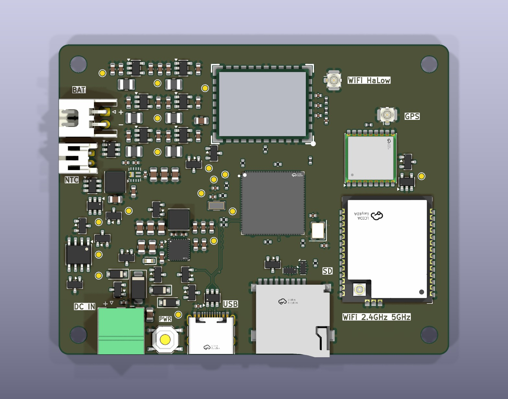
Top: power column left, RV1106 centre, HaLow top, GPS and ESP32-C5 right; DC IN, PWR, USB-C and microSD on the bottom edge.
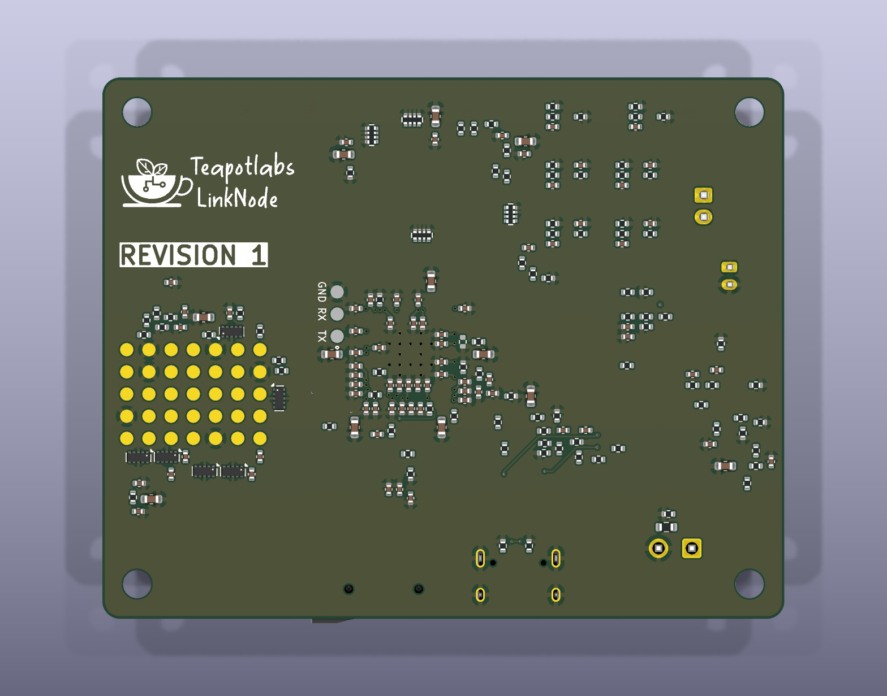
Bottom, seen from below (mirrored): logo and REVISION 1, the 7 × 5 expansion pads, the RV1106 decoupling ring.
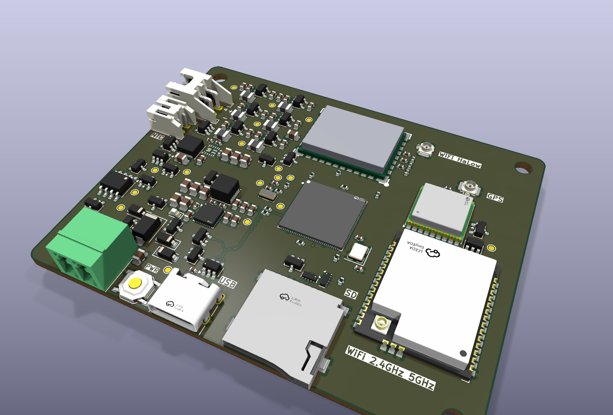
Front angle: the connector edge.
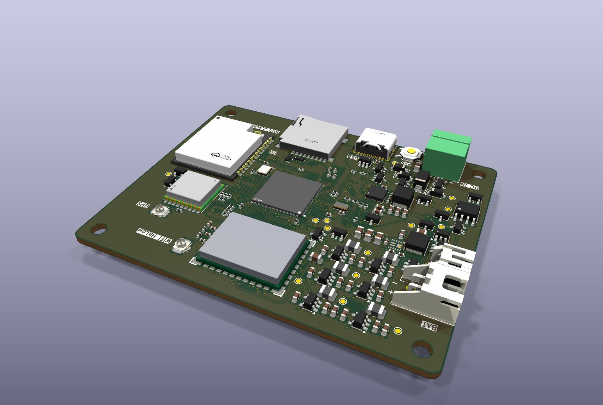
Back angle: battery and NTC headers, the U.FL antenna connectors.
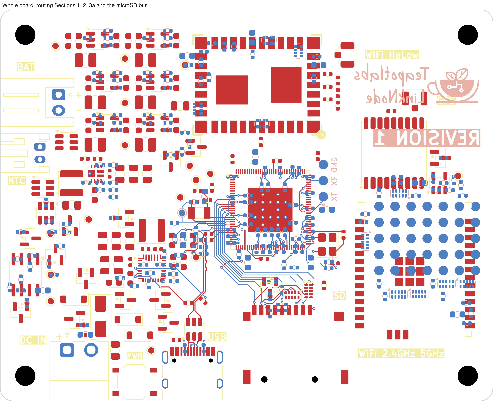
KiCad plot, whole board (zone fills hidden; top copper red, bottom blue, silkscreen yellow): routing Sections 1, 2, 3a and the microSD bus.
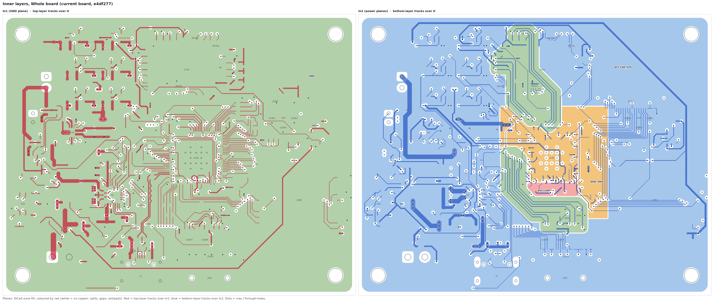
Inner layers (current main board, zones refilled): left: In1, the solid GND plane, with the top-layer tracks over it (red); right: In2, the 5 V plane (blue) and the VDD_0V9 island under the RV1106 (orange), with the bottom-layer tracks over it (blue). White = no copper (splits, gaps, antipads).
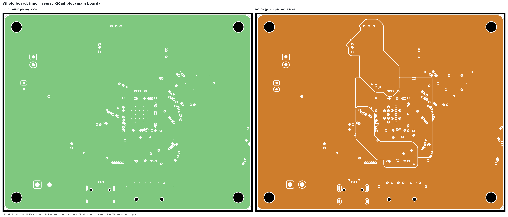
Inner layers, KiCad plot (kicad-cli SVG export, PCB editor colours, zones refilled, holes at actual size): In1 left, In2 right, same area as the figure above. On In2 the white lines are the gaps between plane areas (the 5 V plane and the VDD_0V9 island).
estimate · 2026-11-23Cost · per board · PCBWay turnkey
Estimated cost per board: about $110 at 10 boards, $57 at 100
Components at LCSC prices, bare PCB and turnkey double-sided assembly from PCBWay’s instant-quote calculator (queried 2026-11-23, no account). Board as it stands today: 89 unique parts, 301 placements (118 top incl. 3 through-hole, 183 bottom), 4 layers, 78 × 62 mm, 1.6 mm, ENIG. Shipping, duties/VAT and PCBWay’s parts markup (not published) are not included.
| Per board (USD) | Components | Bare PCB | Assembly | Total | Split |
|---|
| 10 boards, ENIG | 50.69 | 8.75 | 50.87 | 110.31 |
|
| 100 boards, ENIG | 44.87 | 1.98 | 10.35 | 57.20 |
|
| 10 boards, HASL | 50.69 | 5.70 | 50.87 | 107.25 | |
| 100 boards, HASL | 44.87 | 1.66 | 10.35 | 56.89 | |
components bare PCB assembly. Whole order (ENIG): $1,103 for 10 boards, $5,720 for 100.
TL;DR
- At 10 boards, assembly costs as much as the parts ($509 for the order: a fixed cost spread over few boards). At 100 boards the parts are 78 % of the cost.
- The RV1106G3 alone is $21.14–23.87 (LCSC C5328706), about half the component cost. Next: the Heltec HaLow module $11.90 (Heltec store, single-unit price, no volume tiers; LCSC does not stock it, so it would be supplied to PCBWay), ESP32-C5-WROOM-1U $4.17–5.09, BQ25798 $2.04–2.58, ATGM336H GNSS $1.30–1.68. All resistors, capacitors and inductors together: $1.68.
- PCB (78 × 62 mm, 4 layers, 1.6 mm, 4/4 mil, 0.2 mm holes): ENIG $87.47 for 10, $197.95 for 100; HASL $56.95 / $166.27. ENIG is my choice for the 0.35 mm-pitch RV1106 QFN, not a PCBWay requirement. With impedance control (for the USB pair) the ENIG board rises to $135.37 for 10 and $244.47 for 100.
- Assembly (turnkey, both sides): $508.67 for 10, $1,034.84 for 100. PCBWay prices by part count, not solder joint. Its $29 assembly offer does not apply (max 200 parts; this board has 301). Stencil assumed free (“PCBA provides free stencil”; otherwise $15).
- To confirm: PCBWay’s final price follows its BOM review (parts markup unknown); a Rockchip-agent price for the RV1106G3 at volume is unknown; 4 basic capacitors show zero stock at LCSC today (in stock at JLCPCB); the ESP32-C5 (494) and GNSS (950) stock covers 100 boards with little margin. Counts come from today’s board, mid-routing.
- Not on the board and not priced: 18650 cells, solar panel, antennas and U.FL pigtails, microSD card, enclosure.
Sources: LCSC product pages (https://www.lcsc.com/product-detail/<Cxxxx>.html), PCBWay PCB quote (https://www.pcbway.com/orderonline.aspx) and assembly quote (https://www.pcbway.com/quotesmt.aspx), Heltec (https://heltec.org/project/ht-hc01). Every BOM line with its price and source: docs/reports/cost/cost.json.
approvedPlacement · Block 1
Connector edge and mounting holes
All user connectors sit flush on the bottom edge, the battery and NTC headers on the left edge, and one M3 hole in each corner.
TL;DR
- Bottom edge, left to right: DC IN (J2), PWR button (SW1), USB-C (J1), microSD (J401). Left edge: battery (J3) and NTC (J4).
- Four M3 holes (Ø3.2 mm, non-plated), centres 3.975 mm from both edges: hole pattern 70.05 × 54.05 mm for the enclosure.
- USB-C plug to microSD socket: 2.7 mm, room for an enclosure wall between the two openings.
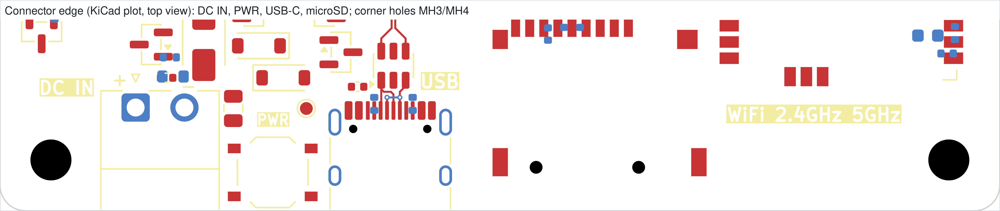
Connector edge, KiCad plot (top view).
Straight on, as the enclosure wall sees it.
| Item | Value |
|---|
| Mounting holes | 4 × Ø3.2 mm, non-plated, no copper; 3.975 mm from both edges; pattern 70.05 × 54.05 mm. Nearest part ≥ 1.1 mm outside the M3 head (Ø5.5 mm). |
| DC IN, USB-C, microSD fronts | Within ±0.2 mm of the bottom edge; the microSD lip 0.5 mm past it. |
| Battery and NTC header mouths | 0.05 mm from the left edge. |
| PWR button | 0.45 mm inside the edge, pressed from the top (needs a hole or plunger in the lid). |
| Clearances between openings | DC plug ↔ PWR button 1.3 mm; USB-C plug (≤ 12.35 mm wide) ↔ microSD socket 2.7 mm. |
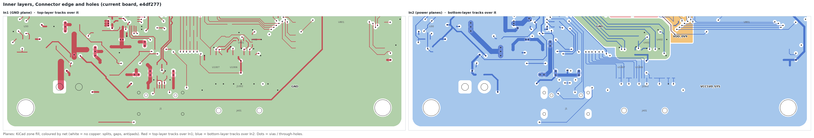
Inner layers (current main board, zones refilled): left: In1, the solid GND plane, with the top-layer tracks over it (red); right: In2, the 5 V plane (blue) and the VDD_0V9 island under the RV1106 (orange), with the bottom-layer tracks over it (blue). White = no copper (splits, gaps, antipads).
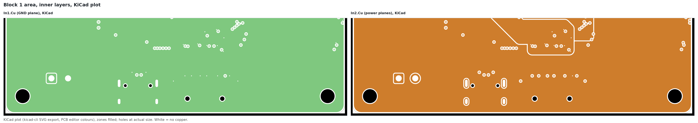
Inner layers, KiCad plot (kicad-cli SVG export, PCB editor colours, zones refilled, holes at actual size): In1 left, In2 right, same area as the figure above. On In2 the white lines are the gaps between plane areas (the 5 V plane and the VDD_0V9 island).
approvedBoard outline · edge margin
Board 78 × 62 mm, with room at the top and right edges
Parts keep at least 2.5 mm from the top and right edges; the connector edges (bottom, left) are flush by design.
TL;DR
- Board outline 78 × 62 mm, four corner holes as in Block 1.
- Closest to the top edge: R102/R112 (bottom) 2.9 mm. Closest to the right edge: the ESP32-C5 module 2.5 mm.
- The expansion pogo pads (bare copper, column 7) are 2.0 mm from the right edge.
- Copper pours (GND on top, In1, bottom; 5 V on In2) follow the outline.
| Edge | Closest parts | Distance |
|---|
| Top | R102 / R112 (radio rail FB resistors, bottom); C702 (HaLow 10 µF, bottom) | 2.9 / 3.0 mm |
| Right | U801 (ESP32-C5 module); U1005 (expansion ESD, bottom); R801, C803 (bottom) | 2.5 / 2.6 / 3.0 / 3.2 mm |
| Right | Expansion pads TP1007…TP1035 (column 7, pad edge) | 2.0 mm |
| Left, bottom | Connectors on the edge, by design | 0 |
approvedPlacement · Block 2
Power: every converter laid out the way TI’s own layout example does it
Each converter is one fixed tile copied from the TI layout example in its datasheet; the six identical bucks share one tile and sit on a grid. Radio rails run along the top, the SoC rails in a 2 × 2 grid, the 5 V boost below them, and the charger between the DC and USB inputs.
TL;DR
- Charger, 5 V boost and six bucks each follow their TI example layout: hot-loop caps at the pins, short SW nodes beside the inductors, FB parts on the bottom away from SW.
- TI layout checks on today’s board: 0 of 114 fail (11 info rows).
- Buck inductors stay ≥ 5.5 mm from the HaLow module (closest 5.53 mm).
- 15 test points (1 mm pads) on the top side.
- Routing notes: SW1/SW2 of the charger drop through vias under U2 to an inner layer (TI item 2); every GND cap pad gets its own via to In1.
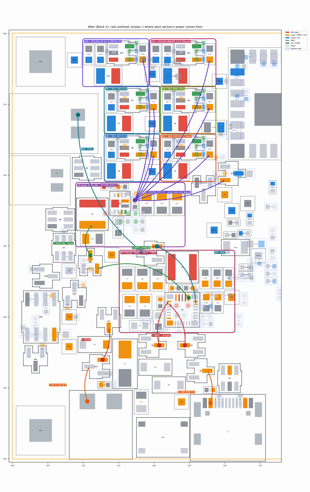
Power column, pad level. Pads coloured by role: red SW node, orange input/PMID/SYS, blue output rail, grey GND, green FB; hatched = bottom side. Each converter is outlined and labelled with the rail it makes; arrows ①–⑥ show the power flow (list below).
Each limit is set from TI’s own example layout with the same package sizes. Where TI’s example itself has a long distance, the row is info only (for example the TLV62569 GND pin is on the far side of the package from VIN, so Cin returns through the ground pour).
Power flow (the arrows in the layout image point from each section’s power source to its input):
- ① DC in (J2, 3.6–24 V) and USB VBUS (J1, 5 V) enter.
- ② DC passes the reverse-protection FET Q11 and becomes
VDCIN.
- ③
VDCIN through Q3/Q4, and USB through Q1/Q2, reach the charger U2’s VBUS pins.
- ④ The charger makes
VSYS, which feeds the hold-off FET Q9.
- ⑤ Q9 switches it to
VSYS_SW, the boost U4’s input (via L2).
- ⑥ The boost makes
VCC5V0_SYS (5 V), carried on the In2 plane to every buck’s input cap and the HaLow FEM switch Q7.
- BAT The cells on J3 (
VCELL) pass the ship FET Q13 to the charger’s BAT pins (VBAT).
Charger (U2, BQ25798): TI Fig 8-21, in TI’s priority order
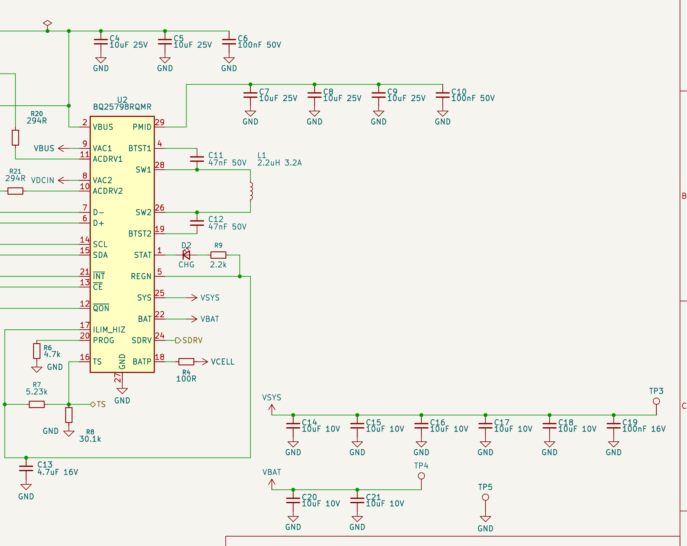
Schematic usb_and_charger.kicad_sch: U2 and its PMID, SYS, VBUS, BAT, REGN and BTST caps.
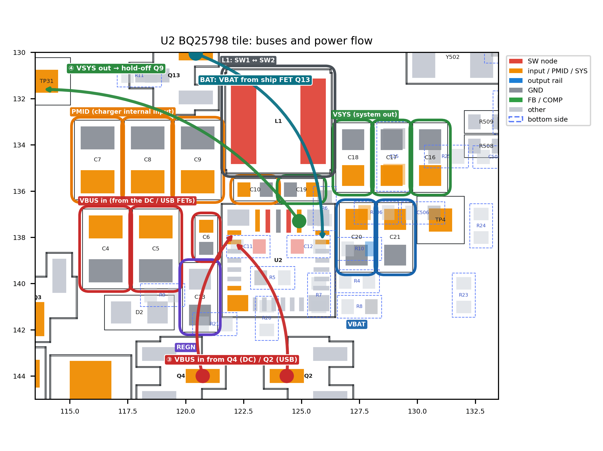
Layout (each cap outlined in its bus colour: PMID orange, VSYS green, VBUS red, VBAT blue, REGN purple). 1. 100 nF PMID (C10) and SYS (C19) caps sit across the top pins, PMID-GND and GND-SYS, with 10 µF banks beside them (PMID C7–C9 left, SYS C16–C18 right). 2. L1 sits above, reached through vias under the IC; the BTST caps C11/C12 are on the bottom under the IC, as TI shows. 3. REGN cap C13 at the REGN pin. 4. 100 nF VBUS cap C6 at the VBUS pins, bulk C4/C5 beyond. 5. BAT caps C20/C21 at the BAT pins. 7. BATP (R4) and the TS divider kept away from SW.
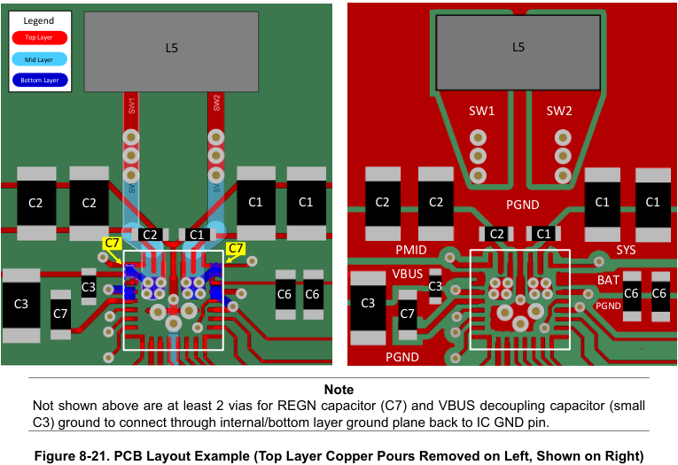
TI reference: TI_BQ25798_RevC_2026.pdf §8.4.2 Fig 8-21 (p.140); priority list §8.4.1 (p.139).Input path: TI Fig 10-1 order
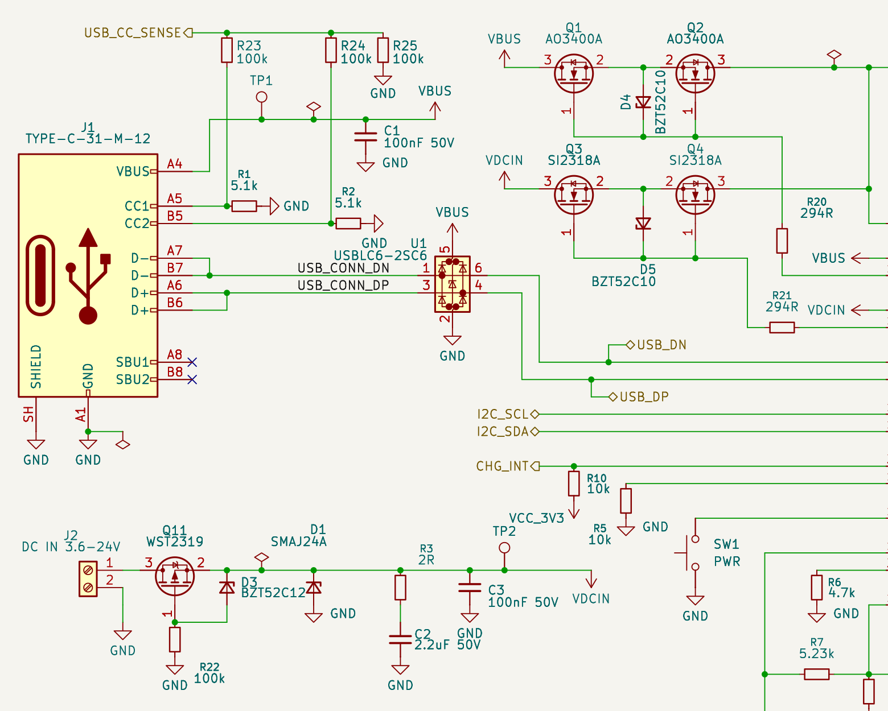
Schematic usb_and_charger.kicad_sch: J2 → Q11 reverse FET (D3, R22) → VDCIN (D1 TVS, C3, R3 + C2 snubber) → Q3/Q4 (D5, R21) → VBUS; J1 → Q1/Q2 (D4, R20) → VBUS.
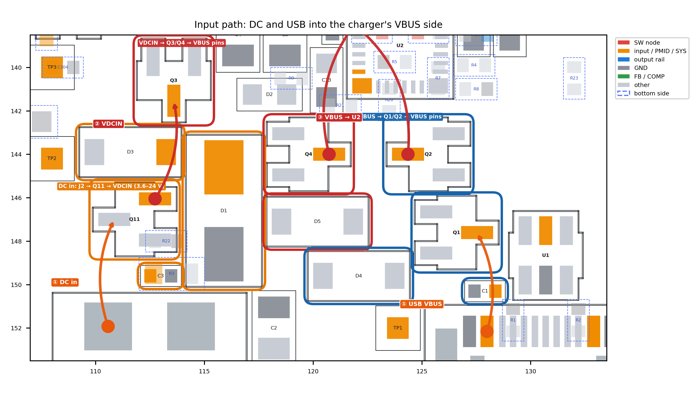
Layout Placed in signal order, from each connector to the charger’s VBUS side (left of U2): DC parts in orange then red, USB parts in blue.
5 V boost (U4, TPS61089): TI Fig 11-1
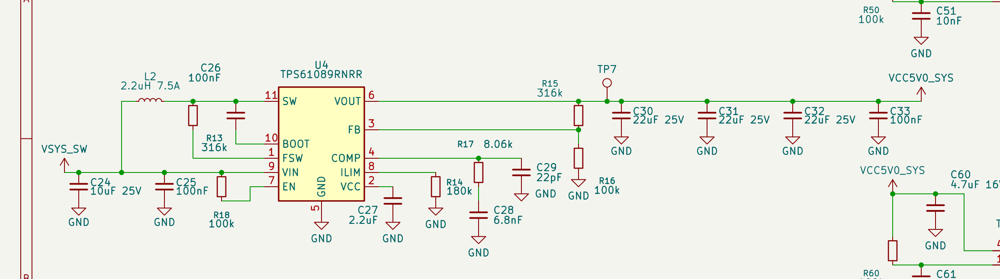
Schematic power.kicad_sch: U4 with L2, Cin C24/C25, Cout C30–C33, BOOT C26, VCC C27, FB R15/R16, COMP R17/C28/C29.
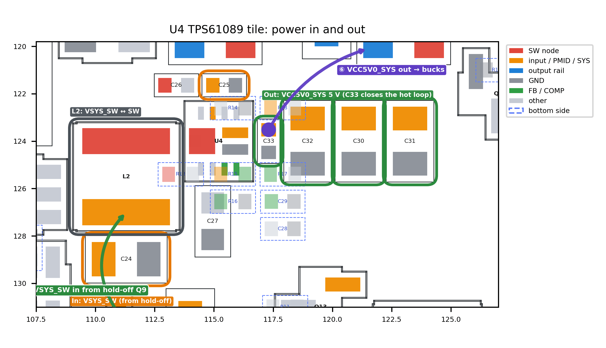
Layout (input bus VSYS_SW in orange, output bus VCC5V0_SYS in green). The boost hot loop (switch FET → rectifier → output cap → GND) is closed by C33 (100 nF), whose pads sit right at VOUT and GND (≤ 1.5 mm). The 22 µF row continues to the right, as in TI’s figure. L2 is on the left with its SW pad level with the SW pin, and bulk Cin C24 sits under it. C25 (100 nF) is on the VIN pin and C26 (BOOT) beside it. The VCC cap is under the VCC pin, and FB, COMP, ILIM, FSW and EN parts are on the bottom.
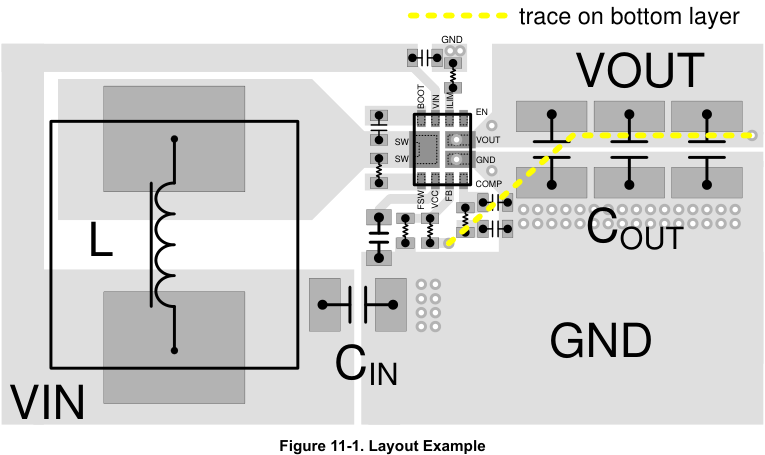
TI reference: TI_TPS61089.pdf §11.2 Fig 11-1 (p.22): “the output capacitor needs not only to be close to the VOUT pin, but also to the GND pin” (§11.1).SoC rails (U5–U8, TLV62569): one tile, TI Fig 20
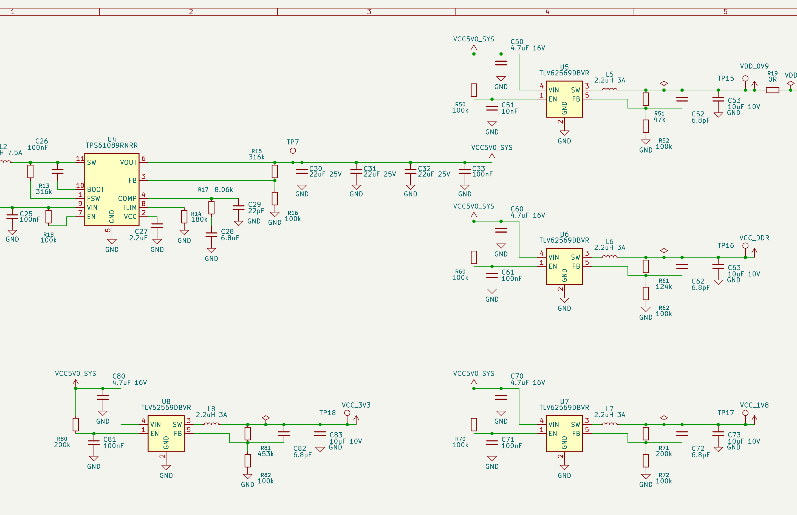
Schematic power.kicad_sch: U5 VDD_0V9, U6 VCC_DDR, U7 VCC_1V8, U8 VCC_3V3, each with Cin, L, Cout, the FB divider + feed-forward cap and the EN RC delay (sequencing). U4 is on the same sheet.
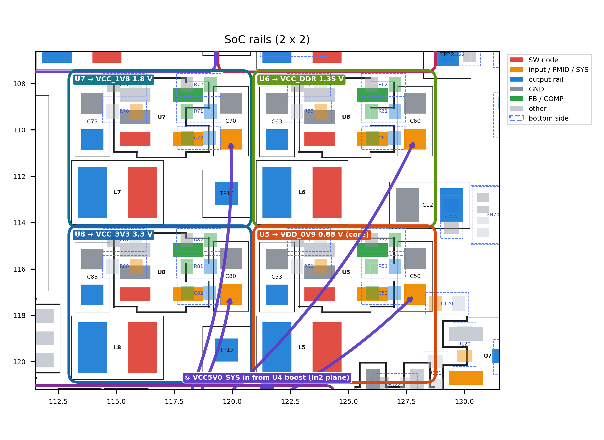
Layout Each tile is outlined and labelled with its output rail. In every tile Cin sits beside VIN, L is next to SW, and Cout is at the L output with its GND by the IC GND pin. The FB divider, Cff and EN parts are on the bottom (hatched), ≥ 0.8 mm from any SW copper. The input of every buck is the 5 V bus VCC5V0_SYS.
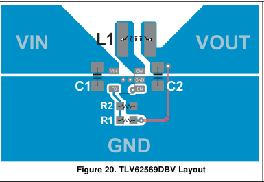
TI reference: TI_TLV62569.pdf §10.2 Fig 20 (p.13). Our tiles are this figure turned 180°. That puts each inductor on the side away from the HaLow module, keeping B6’s ≥ 5.5 mm (L5, L6, L11 at 5.53 mm).Radio rails (U10, U11, TLV62569): same tile with a second output cap
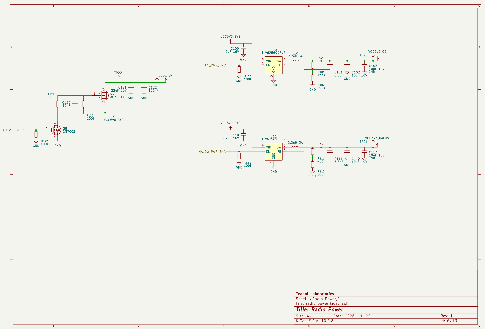
Schematic radio_power.kicad_sch: U10 VCC3V3_C5 and U11 VCC3V3_HALOW, GPIO-enabled (100k pull-down), plus the HaLow 5 V FEM switch Q7/Q8.
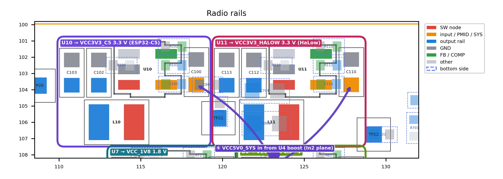
Layout U10 (ESP32-C5 rail) and U11 (HaLow rail) along the top edge. The FEM switch Q7 with C120–C122 and R120–R122 sits beside U11.
Left column: battery protection, ship FET, hold-off
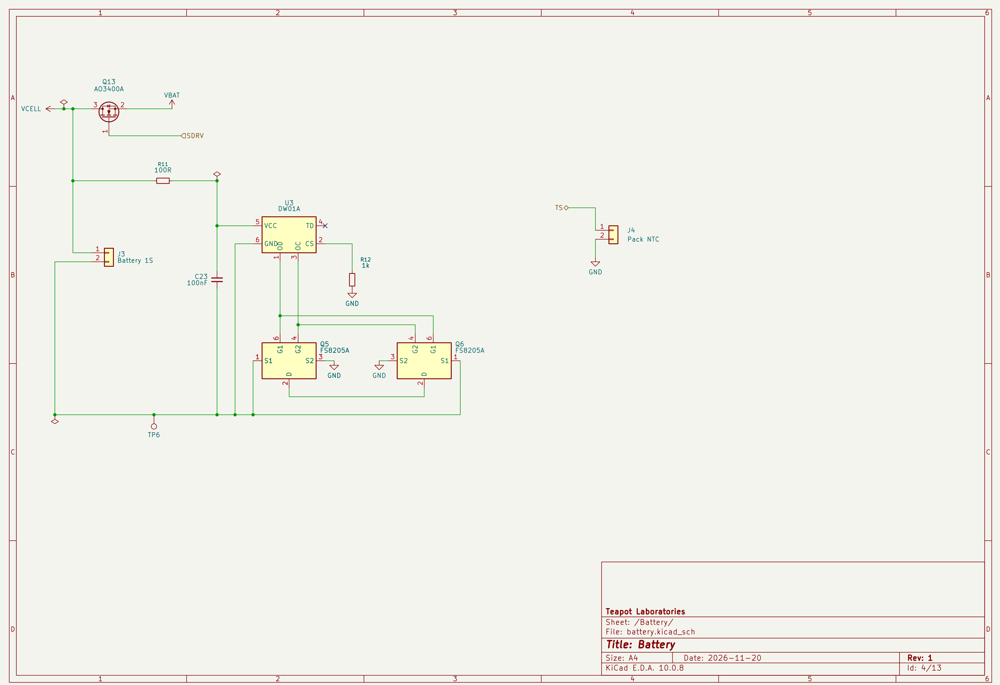
Schematic battery.kicad_sch: J3/J4, DW01A U3 with the FS8205A FETs Q5/Q6, ship FET Q13.
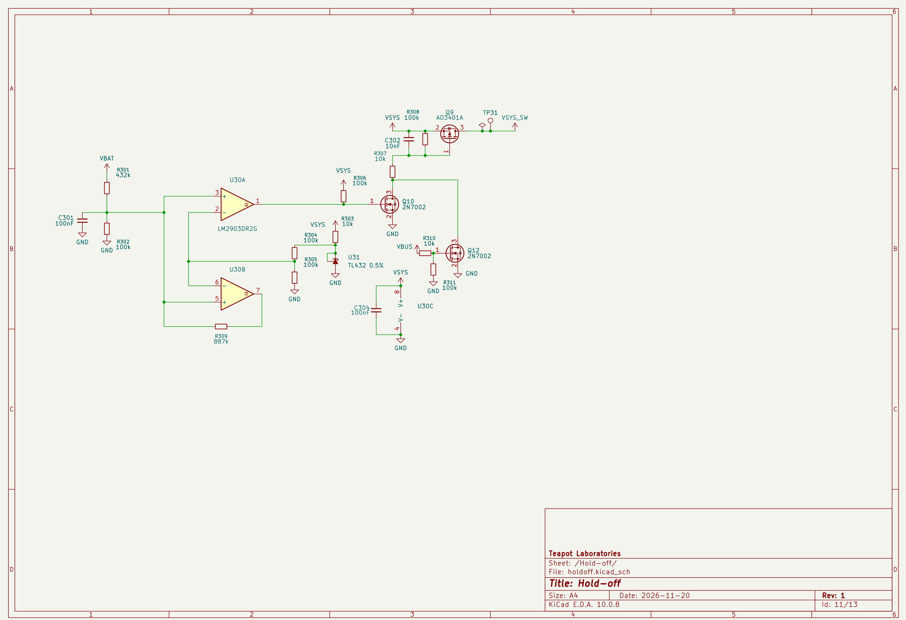
Schematic holdoff.kicad_sch: LM2903 U30 + TL432 U31 switching VSYS → VSYS_SW through Q9; Q10/Q12 for the USB bypass.
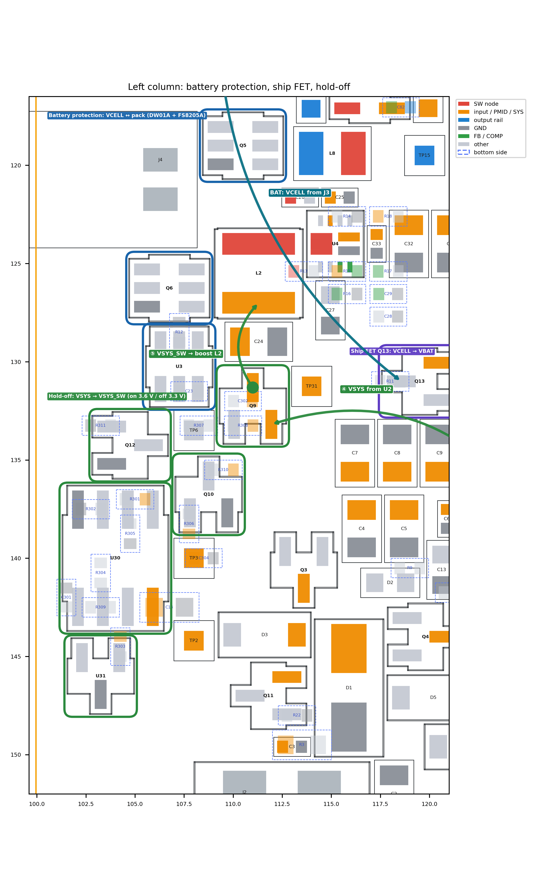
Layout These parts have no TI layout figure. They are packed by net distance next to J3/J4 and the boost input (VSYS_SW → L2). Q13 sits between the cell connector side and the charger BAT pins.
All 125 audit rows on today’s board (pad-centre distances, mm): 0 of 114 rule checks fail
| Converter | Check | Part | mm | Limit | Result | Source |
|---|
| U5 TLV62569 | Cin + at VIN | C50 (top) | 1.84 | ≤ 2 | pass | SLVSDG1C §10.1, Fig 20 |
| U5 TLV62569 | Cin GND to IC GND | C50 (top) | 4.16 | | info | SLVSDG1C §10.1, Fig 20 (GND pin opposite VIN; via the pour) |
| U5 TLV62569 | L pad 1 at SW | L5 (top) | 2.32 | ≤ 2.5 | pass | SLVSDG1C §10.1, Fig 20 |
| U5 TLV62569 | Cout + at L pad 2 | C53 (top) | 2.28 | ≤ 2.5 | pass | SLVSDG1C §10.1, Fig 20 |
| U5 TLV62569 | Cout GND at IC GND | C53 (top) | 1.93 | ≤ 2.5 | pass | SLVSDG1C §10.1, Fig 20 |
| U5 TLV62569 | FB node at FB pin | R51 (bottom) | 0.7 | ≤ 2.5 | pass | SLVSDG1C §10.1, Fig 20 |
| U5 TLV62569 | FB node away from SW | R51 (bottom) | 2.53 | ≥ 0.8 | pass | SLVSDG1C §10.1, Fig 20 |
| U5 TLV62569 | FB node at FB pin | R52 (bottom) | 1.07 | ≤ 2.5 | pass | SLVSDG1C §10.1, Fig 20 |
| U5 TLV62569 | FB node away from SW | R52 (bottom) | 4.01 | ≥ 0.8 | pass | SLVSDG1C §10.1, Fig 20 |
| U5 TLV62569 | FB node at FB pin | C52 (bottom) | 1.85 | ≤ 2.5 | pass | SLVSDG1C §10.1, Fig 20 |
| U5 TLV62569 | FB node away from SW | C52 (bottom) | 2.26 | ≥ 0.8 | pass | SLVSDG1C §10.1, Fig 20 |
| U6 TLV62569 | Cin + at VIN | C60 (top) | 1.84 | ≤ 2 | pass | SLVSDG1C §10.1, Fig 20 |
| U6 TLV62569 | Cin GND to IC GND | C60 (top) | 4.16 | | info | SLVSDG1C §10.1, Fig 20 (GND pin opposite VIN; via the pour) |
| U6 TLV62569 | L pad 1 at SW | L6 (top) | 2.32 | ≤ 2.5 | pass | SLVSDG1C §10.1, Fig 20 |
| U6 TLV62569 | Cout + at L pad 2 | C63 (top) | 2.28 | ≤ 2.5 | pass | SLVSDG1C §10.1, Fig 20 |
| U6 TLV62569 | Cout GND at IC GND | C63 (top) | 1.93 | ≤ 2.5 | pass | SLVSDG1C §10.1, Fig 20 |
| U6 TLV62569 | FB node at FB pin | R61 (bottom) | 0.7 | ≤ 2.5 | pass | SLVSDG1C §10.1, Fig 20 |
| U6 TLV62569 | FB node away from SW | R61 (bottom) | 2.53 | ≥ 0.8 | pass | SLVSDG1C §10.1, Fig 20 |
| U6 TLV62569 | FB node at FB pin | R62 (bottom) | 1.07 | ≤ 2.5 | pass | SLVSDG1C §10.1, Fig 20 |
| U6 TLV62569 | FB node away from SW | R62 (bottom) | 4.01 | ≥ 0.8 | pass | SLVSDG1C §10.1, Fig 20 |
| U6 TLV62569 | FB node at FB pin | C62 (bottom) | 1.85 | ≤ 2.5 | pass | SLVSDG1C §10.1, Fig 20 |
| U6 TLV62569 | FB node away from SW | C62 (bottom) | 2.26 | ≥ 0.8 | pass | SLVSDG1C §10.1, Fig 20 |
| U7 TLV62569 | Cin + at VIN | C70 (top) | 1.84 | ≤ 2 | pass | SLVSDG1C §10.1, Fig 20 |
| U7 TLV62569 | Cin GND to IC GND | C70 (top) | 4.16 | | info | SLVSDG1C §10.1, Fig 20 (GND pin opposite VIN; via the pour) |
| U7 TLV62569 | L pad 1 at SW | L7 (top) | 2.32 | ≤ 2.5 | pass | SLVSDG1C §10.1, Fig 20 |
| U7 TLV62569 | Cout + at L pad 2 | C73 (top) | 2.28 | ≤ 2.5 | pass | SLVSDG1C §10.1, Fig 20 |
| U7 TLV62569 | Cout GND at IC GND | C73 (top) | 1.93 | ≤ 2.5 | pass | SLVSDG1C §10.1, Fig 20 |
| U7 TLV62569 | FB node at FB pin | R71 (bottom) | 0.7 | ≤ 2.5 | pass | SLVSDG1C §10.1, Fig 20 |
| U7 TLV62569 | FB node away from SW | R71 (bottom) | 2.53 | ≥ 0.8 | pass | SLVSDG1C §10.1, Fig 20 |
| U7 TLV62569 | FB node at FB pin | R72 (bottom) | 1.07 | ≤ 2.5 | pass | SLVSDG1C §10.1, Fig 20 |
| U7 TLV62569 | FB node away from SW | R72 (bottom) | 4.01 | ≥ 0.8 | pass | SLVSDG1C §10.1, Fig 20 |
| U7 TLV62569 | FB node at FB pin | C72 (bottom) | 1.85 | ≤ 2.5 | pass | SLVSDG1C §10.1, Fig 20 |
| U7 TLV62569 | FB node away from SW | C72 (bottom) | 2.26 | ≥ 0.8 | pass | SLVSDG1C §10.1, Fig 20 |
| U8 TLV62569 | Cin + at VIN | C80 (top) | 1.84 | ≤ 2 | pass | SLVSDG1C §10.1, Fig 20 |
| U8 TLV62569 | Cin GND to IC GND | C80 (top) | 4.16 | | info | SLVSDG1C §10.1, Fig 20 (GND pin opposite VIN; via the pour) |
| U8 TLV62569 | L pad 1 at SW | L8 (top) | 2.32 | ≤ 2.5 | pass | SLVSDG1C §10.1, Fig 20 |
| U8 TLV62569 | Cout + at L pad 2 | C83 (top) | 2.28 | ≤ 2.5 | pass | SLVSDG1C §10.1, Fig 20 |
| U8 TLV62569 | Cout GND at IC GND | C83 (top) | 1.93 | ≤ 2.5 | pass | SLVSDG1C §10.1, Fig 20 |
| U8 TLV62569 | FB node at FB pin | R81 (bottom) | 0.7 | ≤ 2.5 | pass | SLVSDG1C §10.1, Fig 20 |
| U8 TLV62569 | FB node away from SW | R81 (bottom) | 2.53 | ≥ 0.8 | pass | SLVSDG1C §10.1, Fig 20 |
| U8 TLV62569 | FB node at FB pin | R82 (bottom) | 1.07 | ≤ 2.5 | pass | SLVSDG1C §10.1, Fig 20 |
| U8 TLV62569 | FB node away from SW | R82 (bottom) | 4.01 | ≥ 0.8 | pass | SLVSDG1C §10.1, Fig 20 |
| U8 TLV62569 | FB node at FB pin | C82 (bottom) | 1.85 | ≤ 2.5 | pass | SLVSDG1C §10.1, Fig 20 |
| U8 TLV62569 | FB node away from SW | C82 (bottom) | 2.26 | ≥ 0.8 | pass | SLVSDG1C §10.1, Fig 20 |
| U10 TLV62569 | Cin + at VIN | C100 (top) | 1.84 | ≤ 2 | pass | SLVSDG1C §10.1, Fig 20 |
| U10 TLV62569 | Cin GND to IC GND | C100 (top) | 4.16 | | info | SLVSDG1C §10.1, Fig 20 (GND pin opposite VIN; via the pour) |
| U10 TLV62569 | L pad 1 at SW | L10 (top) | 2.32 | ≤ 2.5 | pass | SLVSDG1C §10.1, Fig 20 |
| U10 TLV62569 | Cout + at L pad 2 | C102 (top) | 2.28 | ≤ 2.5 | pass | SLVSDG1C §10.1, Fig 20 |
| U10 TLV62569 | Cout GND at IC GND | C102 (top) | 1.93 | ≤ 2.5 | pass | SLVSDG1C §10.1, Fig 20 |
| U10 TLV62569 | 2nd Cout beside the 1st (+) | C103 (top) | 1.66 | ≤ 2 | pass | SLVSDG1C §10.1, Fig 20 |
| U10 TLV62569 | 2nd Cout beside the 1st (GND) | C103 (top) | 1.66 | ≤ 2 | pass | SLVSDG1C §10.1, Fig 20 |
| U10 TLV62569 | FB node at FB pin | R101 (bottom) | 0.7 | ≤ 2.5 | pass | SLVSDG1C §10.1, Fig 20 |
| U10 TLV62569 | FB node away from SW | R101 (bottom) | 2.53 | ≥ 0.8 | pass | SLVSDG1C §10.1, Fig 20 |
| U10 TLV62569 | FB node at FB pin | R102 (bottom) | 1.07 | ≤ 2.5 | pass | SLVSDG1C §10.1, Fig 20 |
| U10 TLV62569 | FB node away from SW | R102 (bottom) | 4.01 | ≥ 0.8 | pass | SLVSDG1C §10.1, Fig 20 |
| U10 TLV62569 | FB node at FB pin | C101 (bottom) | 1.85 | ≤ 2.5 | pass | SLVSDG1C §10.1, Fig 20 |
| U10 TLV62569 | FB node away from SW | C101 (bottom) | 2.26 | ≥ 0.8 | pass | SLVSDG1C §10.1, Fig 20 |
| U11 TLV62569 | Cin + at VIN | C110 (top) | 1.84 | ≤ 2 | pass | SLVSDG1C §10.1, Fig 20 |
| U11 TLV62569 | Cin GND to IC GND | C110 (top) | 4.16 | | info | SLVSDG1C §10.1, Fig 20 (GND pin opposite VIN; via the pour) |
| U11 TLV62569 | L pad 1 at SW | L11 (top) | 2.32 | ≤ 2.5 | pass | SLVSDG1C §10.1, Fig 20 |
| U11 TLV62569 | Cout + at L pad 2 | C112 (top) | 2.28 | ≤ 2.5 | pass | SLVSDG1C §10.1, Fig 20 |
| U11 TLV62569 | Cout GND at IC GND | C112 (top) | 1.93 | ≤ 2.5 | pass | SLVSDG1C §10.1, Fig 20 |
| U11 TLV62569 | 2nd Cout beside the 1st (+) | C113 (top) | 1.66 | ≤ 2 | pass | SLVSDG1C §10.1, Fig 20 |
| U11 TLV62569 | 2nd Cout beside the 1st (GND) | C113 (top) | 1.66 | ≤ 2 | pass | SLVSDG1C §10.1, Fig 20 |
| U11 TLV62569 | FB node at FB pin | R111 (bottom) | 0.7 | ≤ 2.5 | pass | SLVSDG1C §10.1, Fig 20 |
| U11 TLV62569 | FB node away from SW | R111 (bottom) | 2.53 | ≥ 0.8 | pass | SLVSDG1C §10.1, Fig 20 |
| U11 TLV62569 | FB node at FB pin | R112 (bottom) | 1.07 | ≤ 2.5 | pass | SLVSDG1C §10.1, Fig 20 |
| U11 TLV62569 | FB node away from SW | R112 (bottom) | 4.01 | ≥ 0.8 | pass | SLVSDG1C §10.1, Fig 20 |
| U11 TLV62569 | FB node at FB pin | C111 (bottom) | 1.85 | ≤ 2.5 | pass | SLVSDG1C §10.1, Fig 20 |
| U11 TLV62569 | FB node away from SW | C111 (bottom) | 2.26 | ≥ 0.8 | pass | SLVSDG1C §10.1, Fig 20 |
| U4 TPS61089 | C33 100 nF + at VOUT (hot loop) | C33 (top) | 1.42 | ≤ 1.5 | pass | SLVSD38C §11.1, Fig 11-1 |
| U4 TPS61089 | C33 100 nF GND at GND (hot loop) | C33 (top) | 1.42 | ≤ 1.5 | pass | SLVSD38C §11.1, Fig 11-1 |
| U4 TPS61089 | 22 uF row: + beside the previous | C32 (top) | 1.71 | ≤ 2.5 | pass | SLVSD38C §11.1, Fig 11-1 |
| U4 TPS61089 | 22 uF row: GND beside the previous | C32 (top) | 1.71 | ≤ 2.5 | pass | SLVSD38C §11.1, Fig 11-1 |
| U4 TPS61089 | 22 uF: + to VOUT pin | C32 (top) | 3.11 | | info | SLVSD38C §11.1, Fig 11-1 (row of caps as in the example) |
| U4 TPS61089 | 22 uF row: + beside the previous | C30 (top) | 2.16 | ≤ 2.5 | pass | SLVSD38C §11.1, Fig 11-1 |
| U4 TPS61089 | 22 uF row: GND beside the previous | C30 (top) | 2.16 | ≤ 2.5 | pass | SLVSD38C §11.1, Fig 11-1 |
| U4 TPS61089 | 22 uF: + to VOUT pin | C30 (top) | 5.24 | | info | SLVSD38C §11.1, Fig 11-1 (row of caps as in the example) |
| U4 TPS61089 | 22 uF row: + beside the previous | C31 (top) | 2.16 | ≤ 2.5 | pass | SLVSD38C §11.1, Fig 11-1 |
| U4 TPS61089 | 22 uF row: GND beside the previous | C31 (top) | 2.16 | ≤ 2.5 | pass | SLVSD38C §11.1, Fig 11-1 |
| U4 TPS61089 | 22 uF: + to VOUT pin | C31 (top) | 7.39 | | info | SLVSD38C §11.1, Fig 11-1 (row of caps as in the example) |
| U4 TPS61089 | C25 100 nF + at VIN | C25 (top) | 1.19 | ≤ 1.5 | pass | SLVSD38C §11.1, Fig 11-1 |
| U4 TPS61089 | C24 10 uF + at L VIN pad | C24 (top) | 2.2 | ≤ 3 | pass | SLVSD38C §11.1, Fig 11-1 |
| U4 TPS61089 | L pad at SW | L2 (top) | 2.9 | ≤ 3.5 | pass | SLVSD38C §11.1, Fig 11-1 |
| U4 TPS61089 | BOOT cap at BOOT | C26 (top) | 1.31 | ≤ 2.5 | pass | SLVSD38C §11.1, Fig 11-1 |
| U4 TPS61089 | BOOT cap at SW | C26 (top) | 2.68 | ≤ 3 | pass | SLVSD38C §11.1, Fig 11-1 |
| U4 TPS61089 | VCC cap at VCC | C27 (top) | 1.43 | ≤ 2.5 | pass | SLVSD38C §11.1, Fig 11-1 |
| U4 TPS61089 | FB node at FB pin | R15 (bottom) | 0.89 | ≤ 2.5 | pass | SLVSD38C §11.1, Fig 11-1 |
| U4 TPS61089 | FB node away from SW | R15 (bottom) | 2.29 | ≥ 0.8 | pass | SLVSD38C §11.1, Fig 11-1 |
| U4 TPS61089 | FB node at FB pin | R16 (bottom) | 1.38 | ≤ 2.5 | pass | SLVSD38C §11.1, Fig 11-1 |
| U4 TPS61089 | FB node away from SW | R16 (bottom) | 2.67 | ≥ 0.8 | pass | SLVSD38C §11.1, Fig 11-1 |
| U4 TPS61089 | COMP R at COMP | R17 (bottom) | 1.46 | ≤ 2.5 | pass | SLVSD38C §11.1, Fig 11-1 |
| U2 BQ25798 | 1. 100 nF PMID + at PMID | C10 (top) | 1.46 | ≤ 1.5 | pass | SLUSDV2C §8.4.1, Fig 8-21 |
| U2 BQ25798 | 1. 100 nF PMID GND at GND | C10 (top) | 1.46 | ≤ 2 | pass | SLUSDV2C §8.4.1, Fig 8-21 |
| U2 BQ25798 | 1. 100 nF SYS + at SYS | C19 (top) | 1.48 | ≤ 1.5 | pass | SLUSDV2C §8.4.1, Fig 8-21 |
| U2 BQ25798 | 1. 100 nF SYS GND at GND | C19 (top) | 1.46 | ≤ 2 | pass | SLUSDV2C §8.4.1, Fig 8-21 |
| U2 BQ25798 | 1. 10 uF PMID beside the 100 nF | C9 (top) | 2.03 | ≤ 3.5 | pass | SLUSDV2C §8.4.1, Fig 8-21 |
| U2 BQ25798 | 1. 10 uF SYS beside the 100 nF | C18 (top) | 1.85 | ≤ 3.5 | pass | SLUSDV2C §8.4.1, Fig 8-21 |
| U2 BQ25798 | 1. PMID bulk chain (+) | C8 (top) | 2.16 | ≤ 2.5 | pass | SLUSDV2C §8.4.1, Fig 8-21 |
| U2 BQ25798 | 1. PMID bulk chain (+) | C7 (top) | 2.16 | ≤ 2.5 | pass | SLUSDV2C §8.4.1, Fig 8-21 |
| U2 BQ25798 | 1. SYS bulk chain (+) | C17 (top) | 1.66 | ≤ 2.5 | pass | SLUSDV2C §8.4.1, Fig 8-21 |
| U2 BQ25798 | 1. SYS bulk chain (+) | C16 (top) | 1.66 | ≤ 2.5 | pass | SLUSDV2C §8.4.1, Fig 8-21 |
| U2 BQ25798 | 1. SYS bulk, system side | C14 (bottom) | 19.63 | | info | SLUSDV2C §8.4.1, Fig 8-21 (system bulk, low-impedance path) |
| U2 BQ25798 | 1. SYS bulk, system side | C15 (bottom) | 4.57 | | info | SLUSDV2C §8.4.1, Fig 8-21 (system bulk, low-impedance path) |
| U2 BQ25798 | 2. L1 to SW1 (via under IC) | L1 (top) | 4.45 | ≤ 6.5 | pass | SLUSDV2C §8.4.1, Fig 8-21 |
| U2 BQ25798 | 2. L1 to SW2 (via under IC) | L1 (top) | 4.45 | ≤ 6.5 | pass | SLUSDV2C §8.4.1, Fig 8-21 |
| U2 BQ25798 | 2. BTST1 cap (bottom, vias) | C11 (bottom) | 0.23 | ≤ 2 | pass | SLUSDV2C §8.4.1, Fig 8-21 |
| U2 BQ25798 | 2. BTST2 cap (bottom, vias) | C12 (bottom) | 1.0 | ≤ 2 | pass | SLUSDV2C §8.4.1, Fig 8-21 |
| U2 BQ25798 | 3. REGN cap + at REGN | C13 (top) | 1.69 | ≤ 2 | pass | SLUSDV2C §8.4.1, Fig 8-21 |
| U2 BQ25798 | 4. 100 nF VBUS + at VBUS | C6 (top) | 1.54 | ≤ 2 | pass | SLUSDV2C §8.4.1, Fig 8-21 |
| U2 BQ25798 | 4. VBUS bulk beside the 100 nF | C5 (top) | 1.88 | ≤ 3 | pass | SLUSDV2C §8.4.1, Fig 8-21 |
| U2 BQ25798 | 4. VBUS bulk chain | C4 (top) | 2.16 | ≤ 2.5 | pass | SLUSDV2C §8.4.1, Fig 8-21 |
| U2 BQ25798 | 5. BAT cap + at BAT | C20 (top) | 1.59 | ≤ 2 | pass | SLUSDV2C §8.4.1, Fig 8-21 |
| U2 BQ25798 | 5. BAT cap chain | C21 (top) | 1.66 | ≤ 2 | pass | SLUSDV2C §8.4.1, Fig 8-21 |
| U2 BQ25798 | 7. BATP (R4) away from SW | R4 (bottom) | 3.57 | ≥ 1.5 | pass | SLUSDV2C §8.4.1, Fig 8-21 |
| U2 BQ25798 | 7. TS divider away from SW | R7 (bottom) | 3.93 | ≥ 1.5 | pass | SLUSDV2C §8.4.1, Fig 8-21 |
| U2 BQ25798 | 7. TS divider away from SW | R8 (bottom) | 4.49 | ≥ 1.5 | pass | SLUSDV2C §8.4.1, Fig 8-21 |
| Floorplan | inductor to HaLow module (courtyards) | L1 (top) | 13.52 | ≥ 5.5 | pass | B6 floorplan rule |
| Floorplan | inductor to HaLow module (courtyards) | L2 (top) | 17.74 | ≥ 5.5 | pass | B6 floorplan rule |
| Floorplan | inductor to HaLow module (courtyards) | L5 (top) | 5.53 | ≥ 5.5 | pass | B6 floorplan rule |
| Floorplan | inductor to HaLow module (courtyards) | L6 (top) | 5.53 | ≥ 5.5 | pass | B6 floorplan rule |
| Floorplan | inductor to HaLow module (courtyards) | L7 (top) | 13.48 | ≥ 5.5 | pass | B6 floorplan rule |
| Floorplan | inductor to HaLow module (courtyards) | L8 (top) | 13.48 | ≥ 5.5 | pass | B6 floorplan rule |
| Floorplan | inductor to HaLow module (courtyards) | L10 (top) | 15.01 | ≥ 5.5 | pass | B6 floorplan rule |
| Floorplan | inductor to HaLow module (courtyards) | L11 (top) | 5.53 | ≥ 5.5 | pass | B6 floorplan rule |
Tool: hardware/tools/blk2_audit.py.
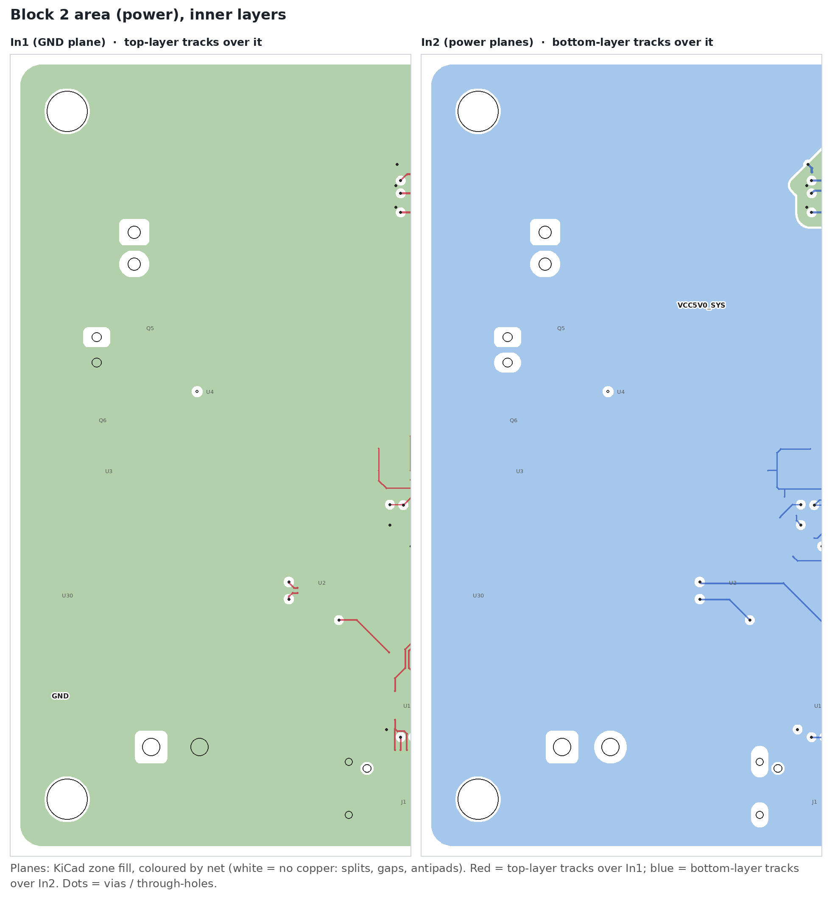
Inner layers (current main board, zones refilled): left: In1, the solid GND plane, with the top-layer tracks over it (red); right: In2, the 5 V plane (blue) and the VDD_0V9 island under the RV1106 (orange), with the bottom-layer tracks over it (blue). White = no copper (splits, gaps, antipads).
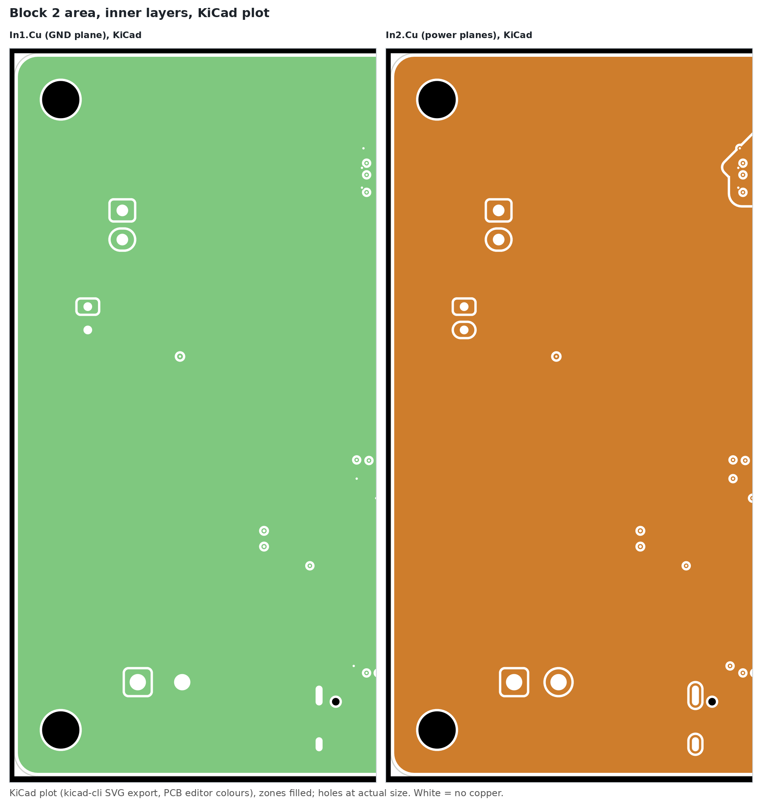
Inner layers, KiCad plot (kicad-cli SVG export, PCB editor colours, zones refilled, holes at actual size): In1 left, In2 right, same area as the figure above. On In2 the white lines are the gaps between plane areas (the 5 V plane and the VDD_0V9 island).
approvedPlacement · Block 3
Radios: every supply pin decoupled at the pin, GPS power and antenna at the module
HaLow (top), GPS and ESP32-C5 (right column) with their decoupling at each supply pin, the GPS LDO at the module and the GPS U.FL at its RF input.
TL;DR
- HaLow and ESP32-C5: each supply pin has its 100 nF + 10/22 µF pair right at the pin (bottom, under the module edge), as the Heltec and Espressif reference schematics show.
- GPS: the 3.3 V LDO beside the module’s VCC pin, the backup LDO above it, the U.FL 2.4 mm from RF_IN.
- Radio checks on today’s board: 1 of 27 fail: L20, the GPS antenna bias choke, 3.2 mm from the RF line (limit 2.5), accepted by you. A 3 mm stub is about λ/33 at 1575 MHz; the U.FL body covers the line, so there is no closer spot on top.
- Limits: 100 nF ≤ 2.0 mm from its pin, bulk ≤ 3.5 mm (Heltec and the LDO makers give no layout distances); GPS antenna connector ≤ 3.0 mm from RF_IN.
HaLow (U701, HT-HC01 V2)
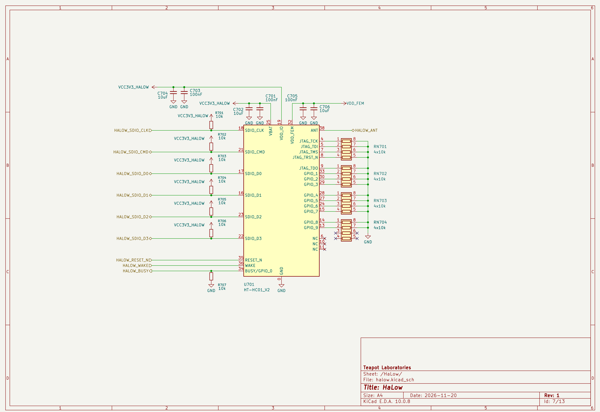
Schematic halow.kicad_sch: U701, the three supply pairs, SDIO pull-ups R701–R706, GPIO/strap pulls RN701–RN704 and R707.
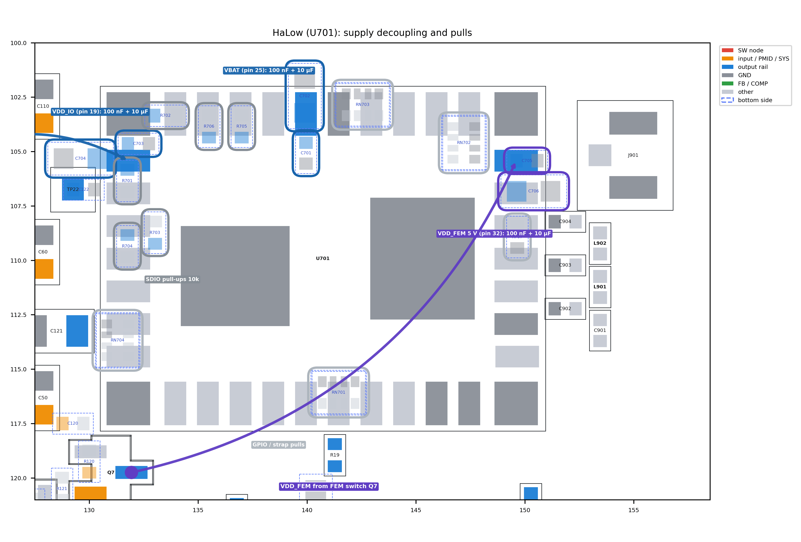
Layout Supply pairs outlined at their pins: VDD_IO pin 19 (C703 + C704), VBAT pin 25 (C701 + C702), VDD_FEM pin 32 (C705 + C706). Arrows: VCC3V3_HALOW from U11 and VDD_FEM from the FEM switch Q7.
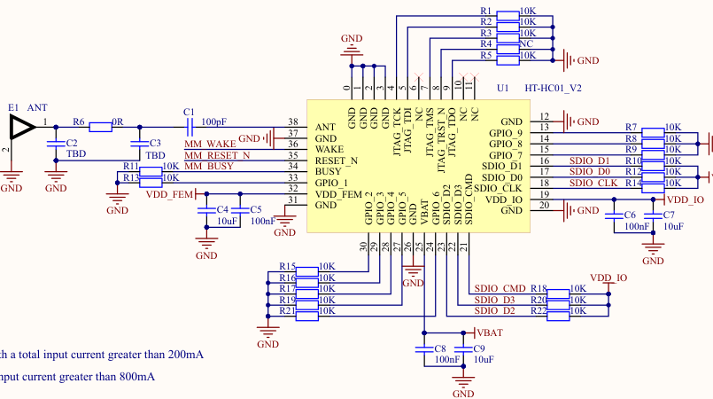
Heltec reference: Heltec_HT-HC01_V2_SDIO_reference.pdf: 100 nF + 10 µF on VDD_IO, VBAT and VDD_FEM, 10k pulls on SDIO and the GPIO/JTAG pins. Heltec publishes no layout guide (datasheet §4 links only these schematics).ESP32-C5 (U801, WROOM-1U)
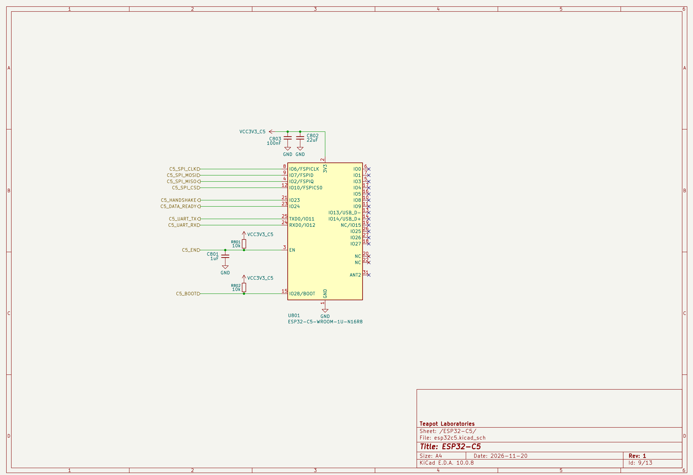
Schematic esp32c5.kicad_sch: U801 with C802 22 µF + C803 100 nF on 3V3, R801 10k + C801 1 µF on EN, R802 BOOT pull-up.
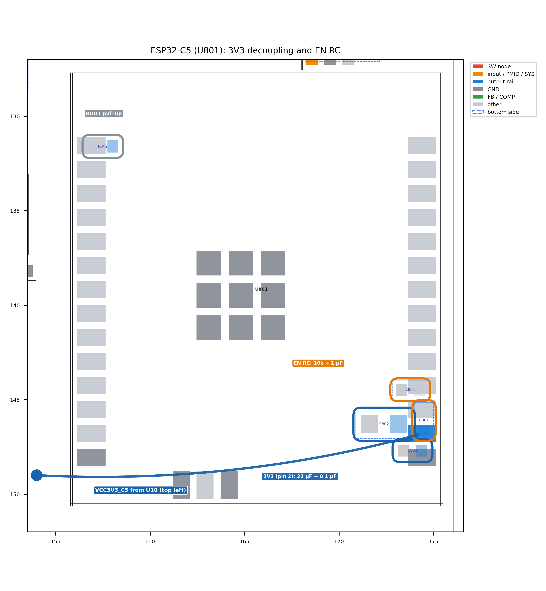
Layout 3V3 (pin 2) pair C802/C803 on the bottom under pin 2; the EN RC and the BOOT pull-up at their pins. These parts sit under the module edge, on the bottom.
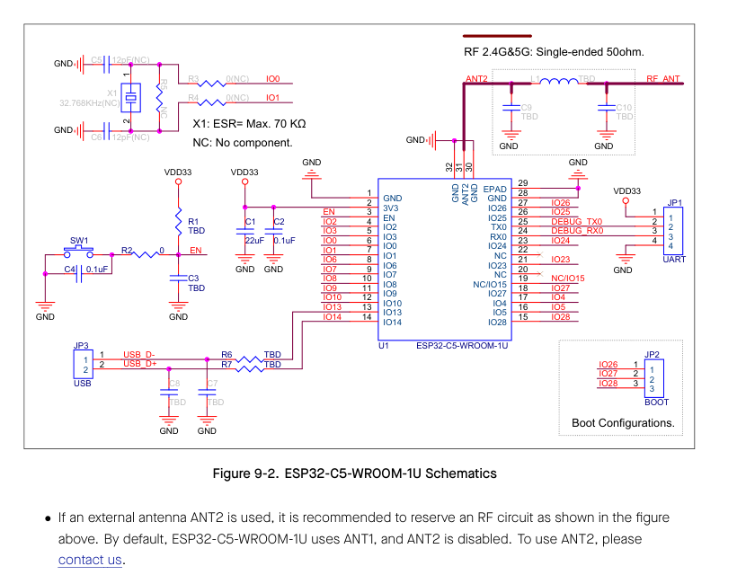
Espressif reference: esp32-c5-wroom-1_wroom-1u_datasheet_en.pdf §9 Fig 9-2 (p.50): C1 22 µF + C2 0.1 µF on 3V3; the RC delay on EN is “usually R = 10 kΩ and C = 1 µF”.GPS (U20, ATGM336H) with its LDOs
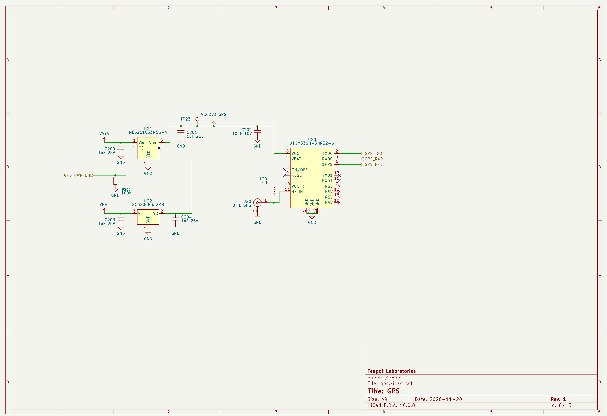
Schematic gps.kicad_sch: U21 ME6211 VSYS → VCC3V3_GPS (GPS_PWR_EN), U22 XC6206 VBAT → the module’s backup VBAT pin, L20 47 nH VCC_RF bias onto the antenna line, J20 U.FL.
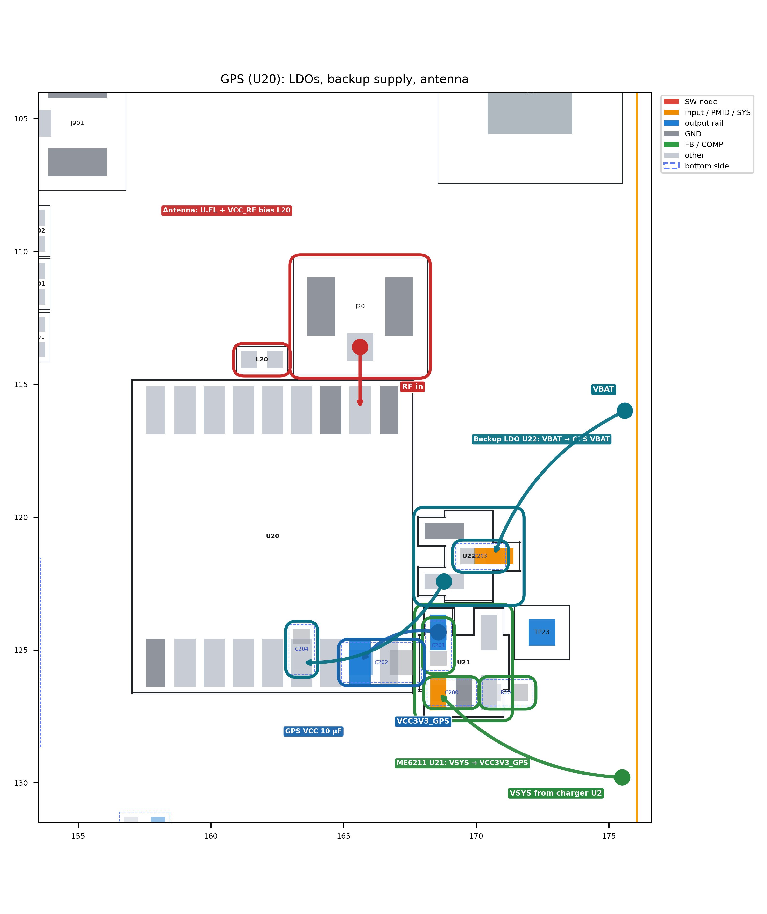
Layout U21 sits beside the module’s VCC pin, with its caps C200/C201 and the 10 µF C202 under the pins on the bottom. The backup LDO U22 is above it, with C204 under the module’s VBAT pin. The U.FL sits at the RF input. Arrows: VSYS from the charger, VBAT, the 3.3 V and backup feeds into the module, and RF in.
ATGM336H manual §2.8 (p.11; ZHONGKEWEI_ATGM336H-5NR32-G.pdf, translated): use a low-ripple LDO, ripple under 50 mVpp; avoid fast, large digital signals near the module and keep a good ground; put the antenna connector as close as possible to RF_IN, with 50 Ω matching. Our nearest switching inductor is 31 mm from the module.
All 36 audit rows on today’s board (pad-centre distances, mm): 1 of 27 rule checks fail
| Module | Check | Part | mm | Limit | Result | Source |
|---|
| U701 HaLow | 100 nF at VDD_IO (pin 19) | C703 (bottom) | 0.78 | ≤ 2 | pass | Heltec SDIO reference |
| U701 HaLow | 10 uF at VDD_IO (pin 19) | C704 (bottom) | 1.43 | ≤ 3.5 | pass | Heltec SDIO reference |
| U701 HaLow | 100 nF at VBAT (pin 25) | C701 (bottom) | 1.32 | ≤ 2 | pass | Heltec SDIO reference |
| U701 HaLow | 10 uF at VBAT (pin 25) | C702 (bottom) | 0.08 | ≤ 3.5 | pass | Heltec SDIO reference |
| U701 HaLow | 100 nF at VDD_FEM (pin 32) | C705 (bottom) | 0.02 | ≤ 2 | pass | Heltec SDIO reference |
| U701 HaLow | 10 uF at VDD_FEM (pin 32) | C706 (bottom) | 1.4 | ≤ 3.5 | pass | Heltec SDIO reference |
| U701 HaLow | pull on pin 18 | R701 (bottom) | 0.08 | | info | Heltec SDIO reference |
| U701 HaLow | pull on pin 21 | R702 (bottom) | 0.1 | | info | Heltec SDIO reference |
| U701 HaLow | pull on pin 17 | R703 (bottom) | 1.24 | | info | Heltec SDIO reference |
| U701 HaLow | pull on pin 16 | R704 (bottom) | 0.08 | | info | Heltec SDIO reference |
| U701 HaLow | pull on pin 23 | R705 (bottom) | 0.08 | | info | Heltec SDIO reference |
| U701 HaLow | pull on pin 22 | R706 (bottom) | 0.08 | | info | Heltec SDIO reference |
| U701 HaLow | pull on pin 34 | R707 (bottom) | 0.05 | | info | Heltec SDIO reference |
| U801 ESP32-C5 | 0.1 uF at 3V3 (pin 2) | C803 (bottom) | 0.9 | ≤ 2 | pass | ESP32-C5-WROOM-1U datasheet §9, Fig 9-2 |
| U801 ESP32-C5 | 22 uF at 3V3 (pin 2) | C802 (bottom) | 1.32 | ≤ 3.5 | pass | ESP32-C5-WROOM-1U datasheet §9, Fig 9-2 |
| U801 ESP32-C5 | EN RC: 1 uF at EN (pin 3) | C801 (bottom) | 1.06 | ≤ 2.5 | pass | ESP32-C5-WROOM-1U datasheet §9, Fig 9-2 |
| U801 ESP32-C5 | EN RC: 10k at EN (pin 3) | R801 (bottom) | 0.13 | ≤ 2.5 | pass | ESP32-C5-WROOM-1U datasheet §9, Fig 9-2 |
| U801 ESP32-C5 | BOOT pull-up at pin 15 | R802 (bottom) | 0.11 | | info | ESP32-C5-WROOM-1U datasheet §9, Fig 9-2 |
| U20 GPS | U.FL signal pad to RF_IN (pin 11) | J20 (top) | 2.38 | ≤ 3 | pass | ATGM336H manual §2.8 + LDO application circuits |
| U20 GPS | L20 at VCC_RF (pin 14) | L20 (top) | 2.1 | ≤ 3 | pass | ATGM336H manual §2.8 + LDO application circuits |
| U20 GPS | L20 at the RF line | L20 (top) | 3.25 | ≤ 2.5 | fail | ATGM336H manual §2.8 + LDO application circuits |
| U20 GPS | LDO U21 out to GPS VCC (pin 8) | U21 (top) | 3.16 | ≤ 6 | pass | ATGM336H manual §2.8 + LDO application circuits |
| U20 GPS | U21 input cap C200 | C200 (bottom) | 0.02 | ≤ 2 | pass | ATGM336H manual §2.8 + LDO application circuits |
| U20 GPS | U21 output cap C201 | C201 (bottom) | 0.02 | ≤ 2 | pass | ATGM336H manual §2.8 + LDO application circuits |
| U20 GPS | 10 uF C202 at GPS VCC (pin 8) | C202 (bottom) | 0.03 | ≤ 2.5 | pass | ATGM336H manual §2.8 + LDO application circuits |
| U20 GPS | U22 input cap C203 | C203 (bottom) | 0.02 | ≤ 2 | pass | ATGM336H manual §2.8 + LDO application circuits |
| U20 GPS | U22 output cap C204 at GPS VBAT (pin 6) | C204 (bottom) | 0.02 | ≤ 2.5 | pass | ATGM336H manual §2.8 + LDO application circuits |
| Floorplan | inductor to HaLow module | L1 (top) | 13.52 | ≥ 5.5 | pass | B6 floorplan rule |
| Floorplan | inductor to HaLow module | L2 (top) | 17.74 | ≥ 5.5 | pass | B6 floorplan rule |
| Floorplan | inductor to HaLow module | L5 (top) | 5.53 | ≥ 5.5 | pass | B6 floorplan rule |
| Floorplan | inductor to HaLow module | L6 (top) | 5.53 | ≥ 5.5 | pass | B6 floorplan rule |
| Floorplan | inductor to HaLow module | L7 (top) | 13.48 | ≥ 5.5 | pass | B6 floorplan rule |
| Floorplan | inductor to HaLow module | L8 (top) | 13.48 | ≥ 5.5 | pass | B6 floorplan rule |
| Floorplan | inductor to HaLow module | L10 (top) | 15.01 | ≥ 5.5 | pass | B6 floorplan rule |
| Floorplan | inductor to HaLow module | L11 (top) | 5.53 | ≥ 5.5 | pass | B6 floorplan rule |
| Floorplan | nearest switching inductor to GPS module | U20 (top) | 30.94 | | info | ATGM336H manual §2.8 + LDO application circuits (keep noise away) |
Tool: hardware/tools/blk3_audit.py.
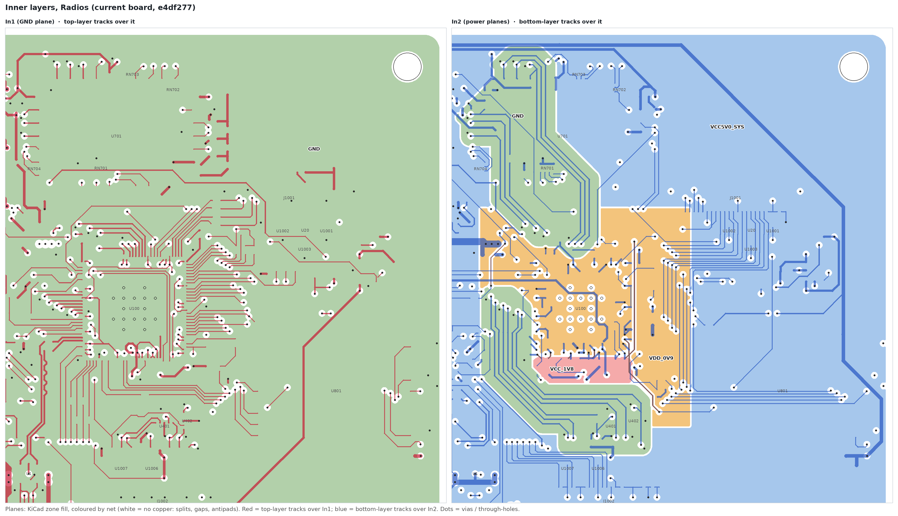
Inner layers (current main board, zones refilled): left: In1, the solid GND plane, with the top-layer tracks over it (red); right: In2, the 5 V plane (blue) and the VDD_0V9 island under the RV1106 (orange), with the bottom-layer tracks over it (blue). White = no copper (splits, gaps, antipads).
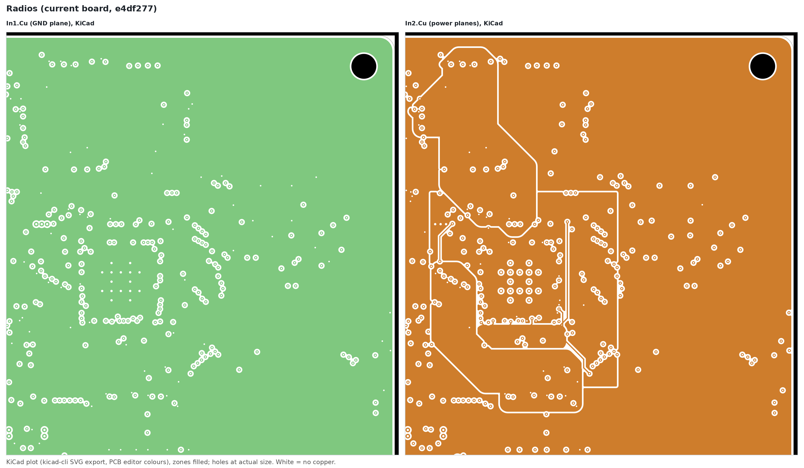
Inner layers, KiCad plot (kicad-cli SVG export, PCB editor colours, zones refilled, holes at actual size): In1 left, In2 right, same area as the figure above. On In2 the white lines are the gaps between plane areas (the 5 V plane and the VDD_0V9 island).
approvedPlacement · Block 4
RV1106 surroundings: series resistors, filter caps and the microSD
Around the RV1106: the decoupling ring, both crystals, the NPOR RC, the USB series resistors and the RTC corner, plus the parts checked against the Rockchip design guide (HDG): series resistors at the transmitter, the ADC and detect filter caps at their pins, and the microSD with ESD.
TL;DR
- R511, the SD clock’s 22 Ω series resistor, 1.6 mm from the RV1106 pin it drives (HDG: series resistors at the transmitter).
- C506 (VBUS detect) and C508 (USB-C CC sense) next to their RV1106 input pins: 3.3 and 2.6 mm.
- microSD ESD: two DOWO TPD4E05U06DQAR arrays (0.5 pF max, LCSC C22390021) behind the socket, 2.1–5.2 mm from the data pins (card-detect 8.6 mm).
- Socket 3D model aligned to the ShouHan drawing; bottom test-pad labels GND / RX / TX on the free side; designators hidden.
- Checks on today’s board: 0 of 16 fail (limits: series R ≤ 3 mm, filter caps ≤ 3.5 mm, the closest spots just outside the RV1106 body).
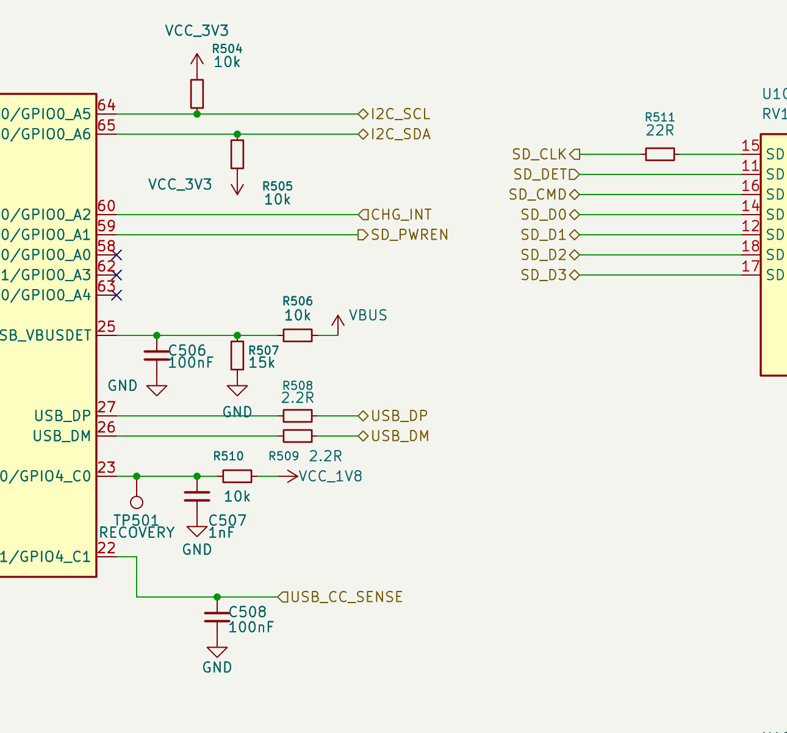
Schematic soc.kicad_sch: R511 22 Ω on SDMMC0_CLK (Rockchip Table 2-7), the USB_DET divider R506/R507 with C506, the recovery input R510/C507/TP501, and C508 on SARADC_IN1 (CC sense).
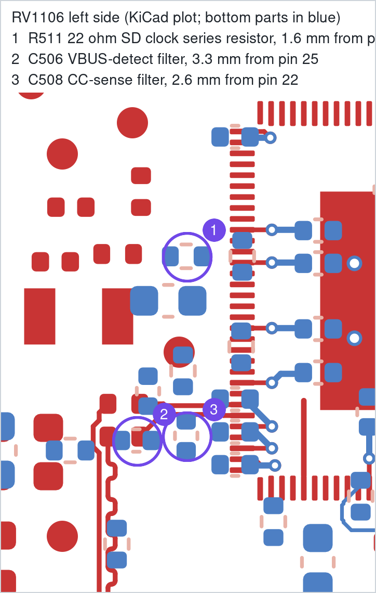
Layout KiCad plot of the RV1106’s left side: ① R511, ② C506, ③ C508 (bottom). C507 (recovery input) sits at pin 23.
Rockchip references for each rule
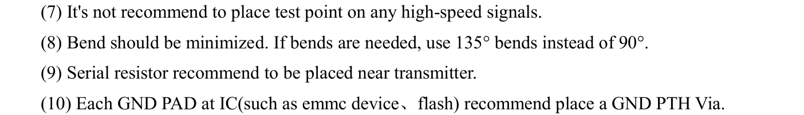
Series resistors: HDG §3.2 item 9 (p.41), “Serial resistor recommend to be placed near transmitter.” R511 sits at the RV1106 pin it drives.
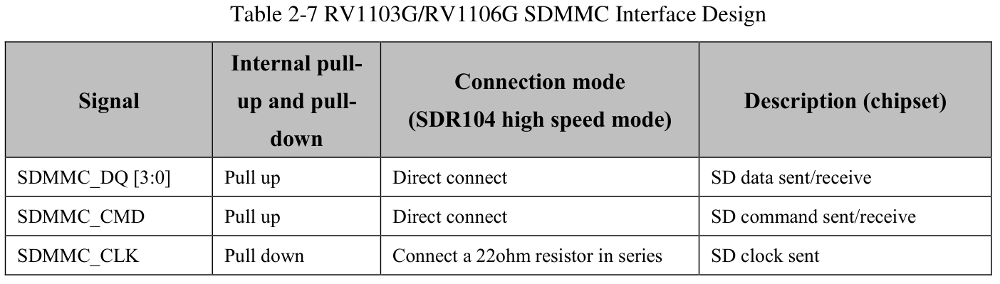
SD clock: HDG Table 2-7 (p.24): SDMMC_CLK gets a 22 Ω series resistor (our R511); data and CMD connect directly.
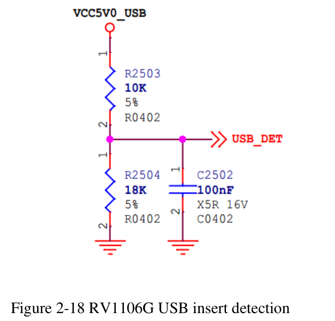
VBUS detect: HDG Fig 2-18 (p.27): divider with a 100 nF cap at USB_DET. Ours is R506/R507 + C506, at the pin.
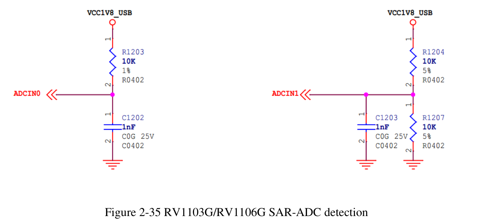
ADC inputs: HDG Fig 2-35 (p.37): 10k pull-up + 1 nF on ADCIN0 (recovery, our R510/C507), and a filtered divider on ADCIN1 (our CC sense, C508).
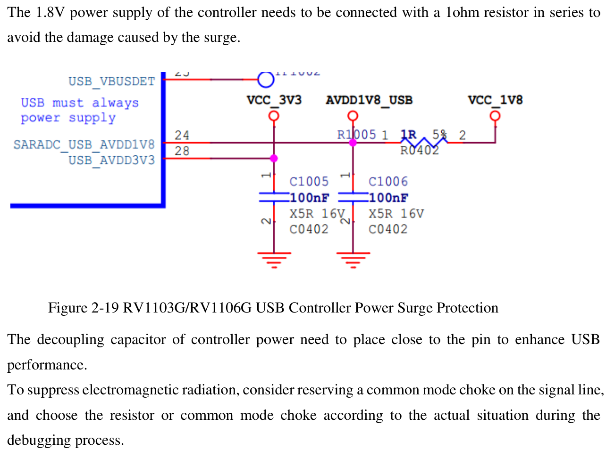
USB controller supply: HDG Fig 2-19 (p.27): 1 Ω series into AVDD1V8_USB (our R601/R602), decoupling at the pin.
microSD socket and ESD
The socket footprint and 3D model match the ShouHan drawing: pin tails on the pads, side tabs on the side pads, the lip 0.5 mm past the board edge; Q401 (SD power switch) has about 2 mm of clearance. U401 protects CLK, CMD, D0 and D1; U402 protects D2, D3 and card-detect (one channel spare). Each ESD GND pad gets its own via at routing (Rockchip §3.2 item 13).
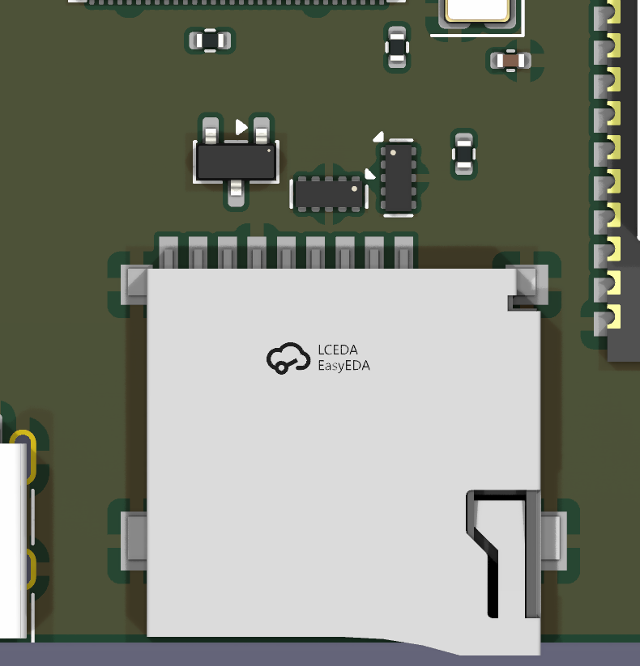
Socket, 3D: tails on the pads, the front at the board edge, Q401 clear, the two ESD arrays behind the socket.
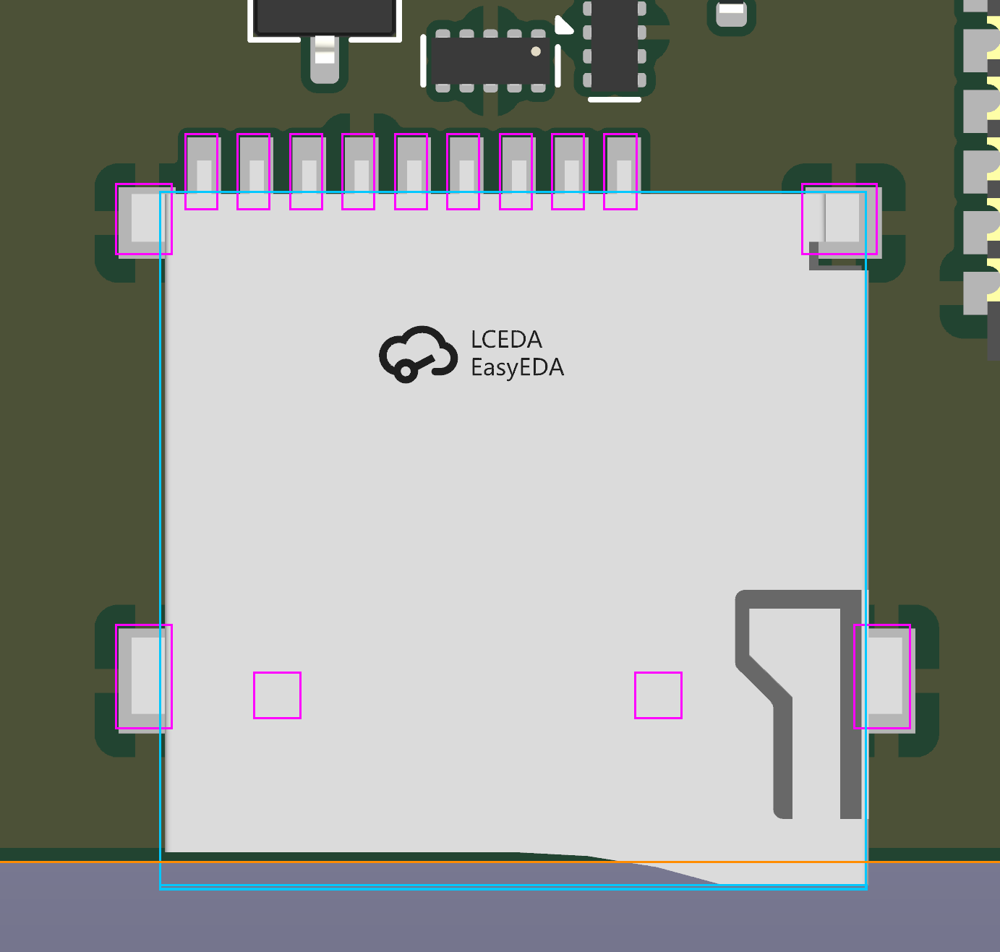
Check: magenta = the socket’s copper pads, cyan = the datasheet body outline (Fab), orange = the board edge. The model fills the outline, with tails and tabs on the pads.
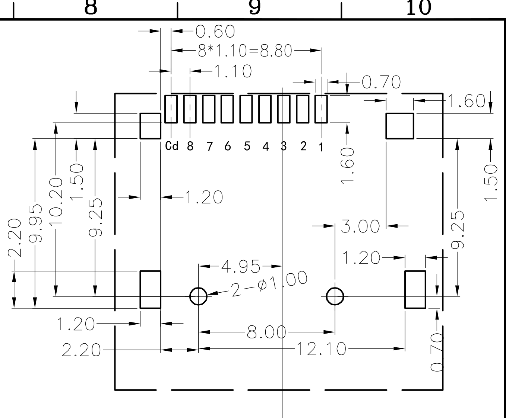
ShouHan reference: ShouHan_TF-PUSH.pdf p.1, recommended PCB layout. The signal pads sit 10.20 + 0.80 mm from the hole line; our footprint matches.
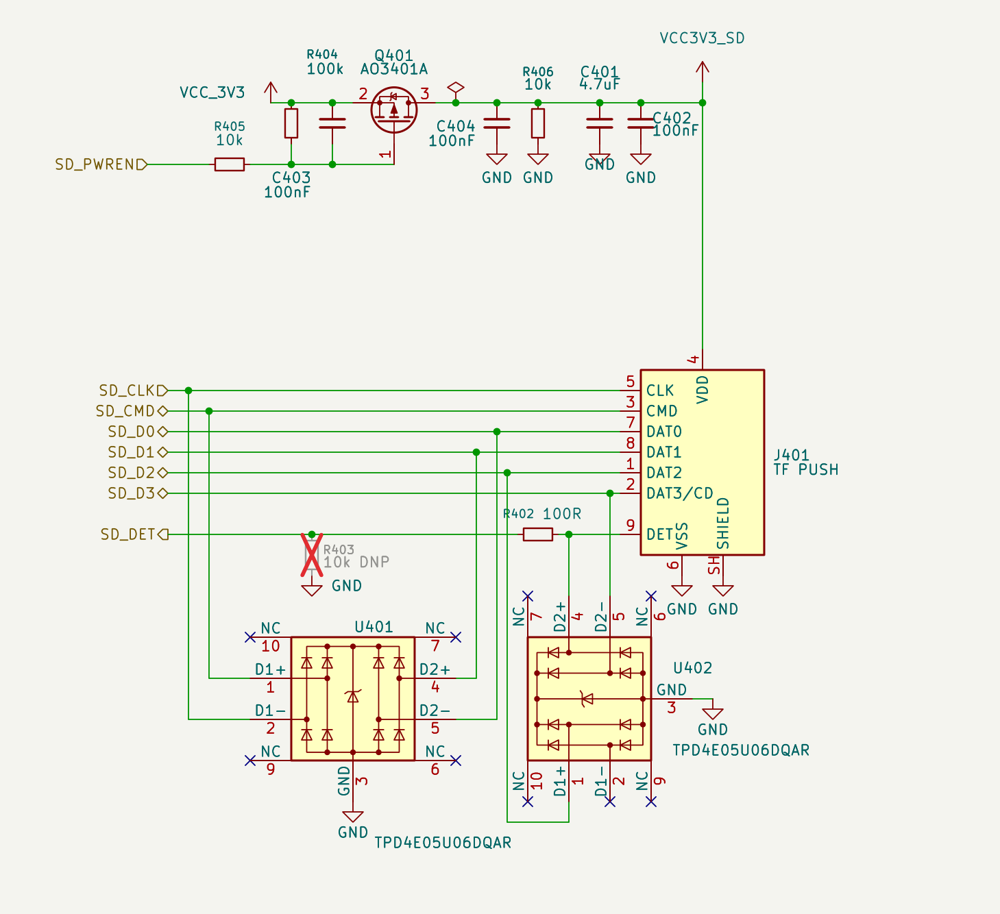
Schematic microsd.kicad_sch: U401 and U402 tap each SD line; NC pins flagged.
Layout U401 and U402 (red) behind the socket; blue lines run from each ESD pad to the socket pin it protects. Each ESD GND pad gets its own via at routing (Rockchip §3.2 item 13).
Rockchip HDG §3.3.1 (p.46): TF-card ESD under 1 pF, close to the connector.
DOWO DOWO_TPD4E05U06DQAR.pdf p.2: VRWM 5.0 V, C(I/O–GND) 0.4 typ / 0.5 max pF, I/O pins 1, 2, 4, 5; GND 3, 8.
Debug test pads J501 (bottom, mirrored): GND / RX / TX on the free side, no designator.
All 20 audit rows on today’s board (pad-centre distances, mm): 0 of 16 rule checks fail
| Group | Check | Part | mm | Limit | Result | Source |
|---|
| Series R | SD_CLK 22R at RV1106 pin 15 | R511 (bottom) | 1.57 | ≤ 3 | pass | HDG §3.2 item 9 (p.41) |
| Series R | SDIO_CLK 22R at RV1106 pin 111 | R513 (top) | 1.75 | ≤ 3 | pass | HDG §3.2 item 9 (p.41) |
| Series R | SPI1 CLK 22R at RV1106 pin 38 | R512 (top) | 2.78 | ≤ 3 | pass | HDG §3.2 item 9 (p.41) |
| Clocks | 24 MHz crystal at XIN (pin 68) | Y501 (top) | 2.15 | ≤ 4 | pass | HDG §2.1.1-2.1.2 (p.14-15) |
| Clocks | 24 MHz load cap C502 at XIN | C502 (top) | 2.41 | ≤ 4 | pass | HDG §2.1.1-2.1.2 (p.14-15) |
| Clocks | 32.768 kHz crystal at RTC pin 20 | Y502 (top) | 4.07 | | info | HDG §2.1.1-2.1.2 (p.14-15) (placed in T30 to open the USB channel) |
| Clocks | 32.768 kHz crystal at RTC pin 21 | Y502 (top) | 6.59 | | info | HDG §2.1.1-2.1.2 (p.14-15) (placed in T30) |
| Clocks | NPOR cap C505 at pin 66 | C505 (bottom) | 1.17 | ≤ 2.5 | pass | HDG §2.1.1-2.1.2 (p.14-15) |
| Clocks | NPOR resistor R503 at pin 66 | R503 (bottom) | 3.6 | ≤ 4 | pass | HDG §2.1.1-2.1.2 (p.14-15) |
| USB | USB 1.8 V series 1R (R601) at pin 24 | R601 (top) | 5.4 | | info | HDG §2.3.5 (p.27) (series R on a supply: info) |
| USB | VBUS detect: 15k R507 at pin 25 | R507 (bottom) | 0.99 | ≤ 3 | pass | practice: divider at the ADC/detect pin |
| USB | VBUS detect filter C506 at pin 25 | C506 (bottom) | 3.28 | ≤ 3.5 | pass | practice: filter cap at the input pin, just outside the RV1106 body (bottom under it is kept for fan-out vias); slow / near-DC input |
| ADC | Recovery SARADC_IN0 cap C507 at pin 23 | C507 (bottom) | 3.03 | ≤ 3.5 | pass | practice: filter cap at the input pin, just outside the RV1106 body (bottom under it is kept for fan-out vias); slow / near-DC input |
| ADC | CC sense SARADC_IN1 cap C508 at pin 22 | C508 (bottom) | 2.63 | ≤ 3.5 | pass | practice: filter cap at the input pin, just outside the RV1106 body (bottom under it is kept for fan-out vias); slow / near-DC input (requirement H-15) |
| ADC | DDR ZQ 240R (R604) at pin 52 | R604 (bottom) | 3.43 | ≤ 4 | pass | practice: reference resistor at its pin |
| microSD | 100 nF C404 at socket VDD (pin 4) | C404 (bottom) | 0.48 | ≤ 2 | pass | microSD sheet; HDG §3.3.1 (p.46) |
| microSD | 100 nF C402 at socket VDD | C402 (bottom) | 1.73 | ≤ 3 | pass | microSD sheet; HDG §3.3.1 (p.46) |
| microSD | 4.7 uF C401 at socket VDD | C401 (bottom) | 2.98 | ≤ 4 | pass | microSD sheet; HDG §3.3.1 (p.46) |
| microSD | power switch Q401 drain to socket VDD | Q401 (top) | 3.99 | ≤ 6 | pass | microSD sheet; HDG §3.3.1 (p.46) |
| microSD | ESD on the TF card lines (HDG: < 1 pF, at the connector) | J401 (top) | fitted | | info | HDG §3.3.1 (p.46): U401/U402 at the socket |
Tool: hardware/tools/blk4_audit.py.
approvedSilkscreen
Silkscreen: nothing printed off the board or on a pad
Designators are hidden (decided 2026-11-21); pin-1 and polarity marks are kept.
TL;DR
- Edge connectors (USB-C, DC IN, battery, NTC): outline lines stop 0.15 mm inside the board edge.
- U2’s pin-1 mark clear of C6’s pad (C6 1.54 mm from the VBUS pins, limit 2.0).
- DRC: 0 silkscreen items. The 4 “footprint differs from library” notes (J1–J4, their trimmed silk) are accepted.
Inner layers (current main board, zones refilled): left: In1, the solid GND plane, with the top-layer tracks over it (red); right: In2, the 5 V plane (blue) and the VDD_0V9 island under the RV1106 (orange), with the bottom-layer tracks over it (blue). White = no copper (splits, gaps, antipads).
Inner layers, KiCad plot (kicad-cli SVG export, PCB editor colours, zones refilled, holes at actual size): In1 left, In2 right, same area as the figure above. On In2 the white lines are the gaps between plane areas (the 5 V plane and the VDD_0V9 island).
approvedLabels and branding
Wiring labels on top, Teapotlabs branding on the bottom, in the BWLC1A style
Small labels at every user-facing part, and the Teapotlabs logo with “Teapotlabs / LinkNode” and a separate “REVISION 1”, styled exactly like the BWLC1A board (tracker-c0). The project is named LinkNode (hardware/kicad/linknode.kicad_pro, library nickname linknode).
TL;DR
- Top: BAT + −, NTC, DC IN + −, PWR, USB, SD, and the antennas WiFi HaLow, GPS and WiFi 2.4GHz 5GHz (the ESP32-C5 is dual-band on one antenna port). Bold 1 mm knockout text, plain + and − at the pins; polarity from the netlist (J2 pin 1 = DC +, J3 pin 1 = battery +).
- Bottom: the Teapotlabs cup logo with “Teapotlabs / LinkNode” in Really Free 3 mm (embedded in the board file), and “REVISION 1” in 2 mm bold knockout under the logo.
- No “CHG” label at the charge LED: no room for the 0.8 mm minimum text height.
- Checks: 0 label conflicts with pads, holes, bodies, silkscreen, edge or screw heads; no silkscreen DRC items.
Battery and NTC: “BAT” above J3, + and − at its two pins (next to the pin-1 triangle), “NTC” under J4.
Connector edge: DC IN with + at pin 1 and − at pin 2 (just under the diode), PWR above the button, USB, SD.
Antennas: WiFi HaLow at J901 (beside the HaLow module), GPS at J20.
ESP32-C5: “WiFi 2.4GHz 5GHz” under the module’s own U.FL (bottom-left corner of the module).
Style, copied from BWLC1A
| Item | BWLC1A (tracker-c0) | LinkNode |
|---|
| Product text | “Teapotlabs” / “Tracker C0”, Really Free, 3 mm, bottom | “Teapotlabs” / “LinkNode”, same face, size and offsets to the logo |
| Logo | TeapotLogo footprint, bottom, 8.2 × 5.6 mm | Same footprint, copied into the project library |
| Revision | “REVISION 5”, 2 mm bold knockout, apart from the logo | “REVISION 1”, same style, under the ESP32-C5 module end |
| Part labels | “LTE ANT”, “GNSS”: 1 mm bold knockout; “CHRG” 0.8 mm; + / − plain 1 mm | Same: 1 mm knockout (PWR 0.8 mm to fit above the button); + / − plain 1 mm |
| Font | Embedded in the board file | Embedded the same way |
approvedExpansion breakout · pogo pads
Expansion as pogo-pin pads on the bottom: Ethernet, audio, two I2C, SPI, GPIO and power
Bare test pads on the bottom (no header, no power switches, for cost): users make a small pogo-pin board that bolts to the four corner holes. ESD on every signal pad. These nets are routed last.
TL;DR
- 35 pads (Ø1.5 mm, 2.54 mm pitch, 7 × 5) under the ESP32-C5 on the bottom: Ethernet TX± / RX± (raw), audio (two differential mic inputs, mic bias, line out), I2C2 and I2C0, SPI0, 9 GPIOs at 3.3 V (3 with PWM), 3.3 V, 5 V, GND.
- Position: pad 1 = MH1 + (56.00, 27.20) mm, rows and columns 2.54 mm apart, M3 hole pattern 70.05 × 54.05 mm.
- About $0.20 in parts, no new part types. C5_PWR_EN, GPS_PWR_EN and HALOW_FEM_EN use other RV1106 pins (pins 3, 4, 58) to free the buses.
- Power pads are unswitched (your choice): a short on a user’s board pulls down the node’s 3.3 V or 5 V; recommended load ≤ 0.5 A (5 V equivalent) with a fuse or limited switch on the user’s board. Ethernet needs magnetics and a TVS on the user’s board. 6 GPIOs toggle at boot.
- Recommended pogo pin: BAT WIRELESS BWCD-L5.0W2.0H2.5 (LCSC C2826549).
Left: whole board, top view (the pads are on the bottom side), with the pads drawn in place. A user’s pogo board below uses these same coordinates: pad 1 = MH1 + (56.00, 27.20) mm, rows and columns 2.54 mm apart, 7 × 5 pads, M3 hole pattern 70.05 × 54.05 mm. The figure is drawn from the board itself (hardware/tools/t49_padmap_fig.py). Right: the field close up with pad numbers. The nearest bottom-side part (R802) is 0.87 mm away. The ESP32-C5’s ground pads on top start just below row 4, so their vias go below the field.
Pad map (top view; pad 1 is top-left; row 5 is audio)
| col 1 | col 2 | col 3 | col 4 | col 5 | col 6 | col 7 |
|---|
| Row 1 | 1
ETH_TX+
pin 100 | 2
ETH_TX−
pin 99 | 3
GND
| 4
ETH_RX+
pin 98 | 5
ETH_RX−
pin 97 | 6
GND
| 7
5V
VCC5V0_SYS |
|---|
| Row 2 | 8
GND
| 9
I2C2_SDA
pin 73 | 10
I2C2_SCL
pin 72 | 11
I2C0_SDA
pin 76 | 12
I2C0_SCL
pin 75 | 13
GND
| 14
3V3
VCC_3V3 |
|---|
| Row 3 | 15
SPI0_CS0
pin 95 | 16
SPI0_CLK
pin 94 | 17
SPI0_MOSI
pin 93 | 18
SPI0_MISO
pin 92 | 19
GPIO1_B1
pin 78 · PWM7 | 20
GPIO1_C7
pin 84 · PWM11 | 21
GPIO0_A4
pin 63 · PWM1 |
|---|
| Row 4 | 22
GPIO0_A3
pin 62 | 23
GPIO4_A6
pin 39 * | 24
GPIO4_A4
pin 41 * | 25
GPIO4_A3
pin 42 * | 26
GPIO4_A2
pin 44 * | 27
GPIO4_B0
pin 47 * | 28
GND
|
|---|
| Row 5 | 29
MIC0+
pin 34 via 1 µF | 30
MIC0−
pin 33 via 1 µF | 31
GND
| 32
MIC1+
pin 36 via 1 µF | 33
MIC1−
pin 35 via 1 µF | 34
MICBIAS
pin 32 | 35
LINEOUT
pin 29 |
|---|
* GPIO4 pins are the RV1106’s eMMC / SPI-flash pins. The boot ROM probes them at power-up (HDG §2.1.3), so a peripheral there sees a few toggles at boot and must not look like a flash chip. All GPIO pads are 3.3 V logic. I2C pads have 4.7 kΩ pull-ups to 3.3 V on the board. The Ethernet pairs sit side by side, with GND pads beside them.
RV1106 enable signals on other pins (so I2C0 and I2C2 are free)
| Signal | RV1106 pin | Why it is safe |
|---|
| C5_PWR_EN (ESP32-C5 buck U10) | pin 3 (1.8 V camera-group pin) | TLV62569 EN high threshold 1.2 V max (TI_TLV62569.pdf p.4). The pin resets pulled down, and the 100k pull-down R100 holds it off. |
| GPS_PWR_EN (GPS LDO U21) | pin 4 (1.8 V camera-group pin) | ME6211 CE start-up 1.0 V min (Microne_ME6211.pdf p.6). Resets pulled down; R200 holds it off. |
| HALOW_FEM_EN (2N7002 Q8) | pin 58 (3.3 V, PMU) | A 2N7002 needs more than 1.8 V, so this one is on a 3.3 V pin. Pin 58 resets high-impedance and R122 (100k) holds it low. |
Ethernet: what is on the board and what the user’s board adds
On LinkNode: a 0 Ω resistor in series on each of the four lines, which Rockchip says “cannot be omitted” (HDG Table 2-11). They sit by the pads, where Fig 2-22 draws them, so the long run keeps the ETH_TXP / TXN / RXP / RXN names that the differential-pair router needs. The pairs are routed as 100 Ω differential, under 30 mil skew, over ground (HDG Table 3-2). The 6.04 kΩ EXTR resistor (R605) and the PHY supply bead are on the board. On the user’s board, following HDG Fig 2-22 from the TVS onward: UDD32C03L01 across each pair, the two 10 nF center-tap capacitors, the 1000 pF / 3 kV capacitor and an RJ45 with magnetics (Rockchip uses HR911105A). Putting the TVS there protects at the cable entry, where surges arrive. There are no link LEDs: the RV1106G3 QFN has no ETH_LED pins.
HDG Fig 2-21: FEPHY pins, EXTR 6.04k (fitted as R605).
HDG Fig 2-22: LinkNode carries the 0 Ω resistors on the left (placed by the pads). Everything from the TVS (ED6800/ED6801) to the RJ45 goes on the user’s pogo board.
Audio: what is on the board and what the user’s board adds
The RV1106G has a built-in codec with one line output and two differential mic inputs (HDG §2.3.5.1). It shares pins with the I2S expansion, so only one of the two can be used (HDG §2.3.5 note); LinkNode uses the codec. As Rockchip’s Table 2-12 requires, LinkNode carries a 1 µF capacitor in series on each mic line (C1001–C1004, 0402 X5R, the BOM’s existing 1 µF). The VCM capacitor (C637, 4.7 µF) and the codec’s 1.8 V supply are on the SoC Power sheet. LINEOUT and MICBIAS go straight to their pads, as the table says. All six audio pads have ESD protection (U1006 on the mic lines; MICBIAS and LINEOUT on spare channels of U1005).
- Mic: a differential mic or electret connects to MIC0± or MIC1±. An electret also needs bias from MICBIAS through a resistor on the user’s board (typically a few kΩ; check the mic’s datasheet).
- Line out: line level, for an amplifier on the user’s board; it cannot drive a speaker directly.
- Pad 31, between the two mic pairs, is GND, as a return for the audio.
HDG Fig 2-24: the codec reference. 1 µF in series on MIC0 P/N, 4.7 µF on VCM, LINEOUT and MICBIAS direct.
HDG Table 2-12 (p.31): connection rules for the codec pins.
Power pads (unswitched, your choice)
3V3 connects to VCC_3V3 (the SoC’s TLV62569, 2 A) and 5V to VCC5V0_SYS (the boost). Neither has a switch or limit, so the user’s board must bring its own protection, and its peripherals are powered whenever the node is. The power budget (docs/power-budget.md) leaves about 0.7 A on the 5 V bus at a nearly empty cell with the radios transmitting. The docs will recommend ≤ 0.5 A total (5 V equivalent) for attached boards, and a fuse or current-limited switch on the user’s board. On battery, the hold-off circuit still turns the whole node off at about 3.3 V, so pad power can’t run the cell flat.
Parts (no new part types)
| Ref | Part | Already used as | Each | Note |
|---|
| U1001–U1006 | DOWO TPD4E05U06DQAR, 4-channel ESD, 0.5 pF (LCSC C22390021) | U401, U402 (microSD) | $0.03 | 17 signal pads (I2C ×4, SPI ×4, GPIO ×9) + 6 audio pads, with 1 spare channel. Placed by the pad field. |
| R1001–R1004 | 0 Ω 0402 | R19 | <$0.01 | FEPHY series resistors, at the chip |
| R1005–R1008 | 4.7 kΩ 0402 | R6 | <$0.01 | I2C2 and I2C0 pull-ups |
| C1001–C1004 | 1 µF 0402 X5R (LCSC C52923) | C604, C606, C801, … | <$0.01 | Mic series capacitors (HDG Table 2-12) |
| TP1001–TP1035 | bare pads Ø1.5 mm, bottom (35) | (copper only) | $0 | HASL finish is fine for occasional mating; gold (ENIG) lasts longer but costs more per board. |
Schematic and board
Schematic sheet “Expansion” (expansion.kicad_sch, refs 10xx): the 35 pad test points TP1001–TP1035 (pad n = TP10nn), 6 ESD arrays, the four 0 Ω Ethernet resistors, the four 4.7 kΩ I2C pull-ups and the four 1 µF mic capacitors. On the root sheet every connection is a straight wire with no crossings. On the board the pads sit at pad 1 = MH1 + (56.00, 27.20) mm, with the ESD arrays, resistors and mic capacitors beside them.
Expansion sheet. Each ESD array takes two nets from the left and two from the right, so there are no crossing wires. The Ethernet lines run label → 0 Ω → pad, the mic lines label → 1 µF → pad; the power and GND pads are at the bottom.
Root sheet: Expansion below SoC (17 straight wires); SoC Power in the left column feeds it 10 straight wires (Ethernet + audio).
Board bottom (mirrored view): the 7 × 5 pad field, its ESD arrays, resistors and mic capacitors, the logo block and REVISION 1.
Recommended pogo pin for the user’s board
BAT WIRELESS BWCD-L5.0W2.0H2.5, LCSC C2826549, $0.077 each (45k in stock), so a full 35-pin board costs about $2.70 in pins. From its datasheet (hardware/datasheets/BatWireless_BWCD-L5.0W2.0H2.5.pdf p.4–5): Ø0.90 mm plunger with a domed tip (lands on our Ø1.5 mm pads with about ±0.3 mm to spare), Ø2.00 mm solder flange (SMD, 0.54 mm apart on the 2.54 mm grid), 5.0 mm long, 2.5 mm stroke, 75 ± 20 g at working height, 10,000 cycles, 1.5 A, 30 V DC, gold plated.
- Mounting: the user’s board copies the four M3 holes (70.05 × 54.05 mm) and uses about 3.5 mm standoffs, so each pin compresses about 1.5 mm of its 2.5 mm stroke. A strip board that uses only the right-hand holes MH2 and MH4 also works and avoids the through-hole connector legs.
- Force: 35 pins × 75 g ≈ 2.6 kgf, so the boards must be screwed together, not just pressed.
- Clearance: our parts next to the field are 0402s and ESD arrays, under 1 mm tall. Keep the user’s parts on that face lower than the standoff gap minus 1 mm.
- Ethernet: the user’s board carries the TVS, the center-tap capacitors and the RJ45 with magnetics (HDG Fig 2-22), as close to the pogo pins as possible.
- Pad on the user’s board: a Ø2.2 mm round SMD pad per pin (my suggestion; the datasheet gives no land pattern), at the same coordinates as ours seen from above.
BWCD-L5.0W2.0H2.5 drawing (datasheet p.5): Ø0.90 plunger, Ø1.50 barrel, Ø2.00 flange, 5.0 mm long, 2.5 mm spring travel.
Inner layers (current main board, zones refilled): left: In1, the solid GND plane, with the top-layer tracks over it (red); right: In2, the 5 V plane (blue) and the VDD_0V9 island under the RV1106 (orange), with the bottom-layer tracks over it (blue). White = no copper (splits, gaps, antipads).
Inner layers, KiCad plot (kicad-cli SVG export, PCB editor colours, zones refilled, holes at actual size): In1 left, In2 right, same area as the figure above. On In2 the white lines are the gaps between plane areas (the 5 V plane and the VDD_0V9 island).
approvedRouting · rules and Section 1
Routing rules, and Section 1: the RV1106’s supply pins fanned out to their decoupling capacitors
Each RV1106 supply pin has a short top stub to a via in the ring between the pin rows and the exposed pad; the via drops to the bottom, where a short link reaches that pin’s decoupling capacitor.
TL;DR
- Routing rules: every track at 0/45/90°, every bend exactly 45° (a right-angle turn is two 45° bends); the only exception is the smooth deskew bumps on length-matched pairs. Signals on top and bottom; the 5 V plane (In2) only for short escapes; In1 stays solid GND. Expansion nets last.
- Tools: my own scripts (no Freerouting); differential pairs use KiCad’s own diff-pair router. Every section gets a net-coloured figure and a KiCad plot.
- Section 1: 29 ring vias, 32 bottom links, 2 GND stubs into the exposed pad, GND vias for the 24 MHz crystal (outside its keep-out), and DDR ZQ (pin 52) through its own via to R604. 99 tracks, 32 vias.
- C619, C628 and R503 are linked in the rail-routing section (a straight link would not keep clearance).
- Checks: DRC adds nothing; schematic parity 0; every bend 45°.
Section 1 by net (click to zoom). Top copper left, bottom copper (seen from the top) right. Pads and tracks of each routed net share a colour, and every pad of a routed net carries its net name; grey pads are not routed yet; small grey text is the part reference.
Section 1, KiCad plot (zone fills hidden; top copper red, bottom blue).
Inner layers (current main board, zones refilled): left: In1, the solid GND plane, with the top-layer tracks over it (red); right: In2, the 5 V plane (blue) and the VDD_0V9 island under the RV1106 (orange), with the bottom-layer tracks over it (blue). White = no copper (splits, gaps, antipads).
Inner layers, KiCad plot (kicad-cli SVG export, PCB editor colours, zones refilled, holes at actual size): In1 left, In2 right, same area as the figure above. On In2 the white lines are the gaps between plane areas (the 5 V plane and the VDD_0V9 island).
approvedRouting · Section 2 · USB 2.0
USB pair: KiCad’s diff-pair route with smooth deskew bumps
USB D+/D− from the RV1106 (pins 27/26) through the series resistors R508/R509 (2.2 Ω, at the transmitter) and the USBLC6 ESD chip (U1) to the USB-C connector (J1), with the charger’s USB-type (BC1.2) taps to the BQ25798 (U2, pins 6/7). Rockchip’s rules (HDG V1.1 §3.3.3 p.48): 90 Ω differential, skew under 30 mil (0.76 mm), at most 6 vias per line, other signals more than 20 mil (0.5 mm) away.
TL;DR
- Routed with KiCad’s own diff-pair router: one coupled pair on the top layer over solid GND, 0.155 mm lines with a 0.127 mm gap (USB90 class), 45° bends.
- Skew 0.00 mm from the RV1106 to U1 (19.13 mm both lines), from 4 smooth deskew bumps on D+ right after R508 (0.23 mm high, rounded). To the USB-C pins: 0.26 mm (B row) and 0.02 mm (A row).
- Net names:
USB_SOC_DP/DN (RV1106 → R508/R509), USB_DP/DN (→ U1 and the charger), USB_CONN_DP/DN (USB-C → U1).
- USB-C: its pads alternate D−/D+/D−/D+, so D+ reaches pad A6 through 2 vias and a 1 mm bottom link (no copper under the shell). For the A-row plug orientation that adds about 3 mm of via barrel to D+, about 20 ps; kept this way by your choice (no copper under the grounded shell).
- Charger (BC1.2) taps behind 0 Ω links R26 (D−) / R27 (D+), not fitted by default: each link sits right against its line, so unfitted the USB lines have no branch (HDG §3.2 item 24, stubs as short as possible). Fitted, the BQ25798 detects the adapter type over the taps (D− 10.6 mm, D+ 14.9 mm). With the links unfitted, firmware takes the charge current from the USB-C CC pins (requirement F-10).
- GND vias 1.25 mm from both USB-C crossover vias (HDG §3.3.3), the closest legal spots.
- Checks: DRC adds nothing (USB skew, via-count and spacing rules included); ERC 0; schematic parity 0; every bend 45° apart from the bumps.
Section 2 by net (click to zoom). Left, top copper: the coupled pair from R508/R509 (top right) down to U1 (bottom centre), the deskew bumps on D+ near the top, the connector side fanning into the USB-C pads. Right, bottom copper (seen from the top): the two charger taps to U2 (behind R26/R27) and the short D+ link at the connector.
KiCad plot (zone fills hidden; top copper red, bottom blue, silkscreen yellow): ① the deskew bumps, ② the 0 Ω links R26/R27 (not fitted), ③ the D+ vias to USB-C pad A6 with a GND via on each side, ④ the charger taps arriving just outside U2.
Deskew bumps, KiCad plot: 4 bumps, 0.23 mm high, rounded with 0.12 mm radius quarter arcs, 0.45 mm apart. They add the 1.06 mm by which D− is longer: R509 (D−) sits 1.05 mm north of R508, so D− runs further to join the pair.
| Path (pad to pad, copper) | D− | D+ | Skew |
|---|
| RV1106 → R509/R508 | 3.33 mm | 3.60 mm | |
| R509/R508 → U1 (D+ with the bumps) | 15.80 mm | 15.53 mm | |
| RV1106 → U1 | 19.13 mm | 19.13 mm | 0.00 mm |
| U1 → USB-C B row (B7/B6), no vias | 2.36 mm | 2.10 mm | 0.26 mm (10 mil) |
| U1 → USB-C A row (A7/A6) | 3.08 mm | 3.10 mm + 2 vias | 0.02 mm + ≈3 mm via barrel on D+ |
| Charger tap behind R26/R27 (only when fitted) | 10.6 mm, 2 vias | 14.9 mm, 2 vias | |
Approved by you on 2026-11-23: KiCad’s diff-pair route with four smooth deskew bumps. Next: Section 3, the RV1106 signal nets (escapes and short local links), then its local rails and ground, then SD/SDIO length matching.
Inner layers (current main board, zones refilled): left: In1, the solid GND plane, with the top-layer tracks over it (red); right: In2, the 5 V plane (blue) and the VDD_0V9 island under the RV1106 (orange), with the bottom-layer tracks over it (blue). White = no copper (splits, gaps, antipads).
Inner layers, KiCad plot (kicad-cli SVG export, PCB editor colours, zones refilled, holes at actual size): In1 left, In2 right, same area as the figure above. On In2 the white lines are the gaps between plane areas (the 5 V plane and the VDD_0V9 island).
approvedRouting · Section 3a · RV1106 local nets
The RV1106’s short local nets: both crystals, the clock series resistors, USB sense, recovery and the debug UART
Section 3 routes the RV1106’s signal nets in three groups: 3a, the short nets to parts right beside the chip; 3b, SD, SDIO, ESP32-C5 and GPS; 3c, the charger’s I2C and the enables. Group 3a has 13 nets. Rockchip asks for short crystal traces with nothing between or under the crystal pads (HDG V1.1 §3.2 item 11, p.41), and 0.5 mm between other signals and the USB pair (§3.3.3, p.48).
TL;DR
- Three placement changes (the rest of the placement unchanged):
- TP501 (the recovery test point, SARADC_IN0) moves to the bottom at (132.1, 132.5), 2.8 mm from R510/C507, which are on the bottom too. On top it sat between the 32 kHz crystal and its RV1106 pins.
- R501 (22 Ω, 24 MHz XOUT series resistor) moves from below Y501 to its east side, upright at (154.35, 133.68).
- C502 (18 pF, 24 MHz XIN load capacitor) moves from above Y501 to the bottom at (152.0, 139.0), just below R502 (1 MΩ feedback, bottom, unchanged).
Y501 itself does not move. Why the crystal cluster changed: XOUT (pin 69) is above XIN (pin 68), but R501 was below the crystal and C502 above it, so XOUT had to cross XIN. Now XOUT runs along the crystal’s top edge to R501, and XIN goes straight into the crystal with one via down to C502 and R502.
- 32.768 kHz crystal (Y502): both traces on top, no vias. XOUT 7.9 mm and XIN 9.5 mm, load capacitors included. XIN passes under the crystal body, south of the keep-out between the pads.
- 24 MHz crystal (Y501): pin 68 → crystal 2.2 mm (straight); XOUT pin 69 → R501 5.8 mm; R501 → crystal 3.2 mm; C501 directly below the crystal pad. All on top, no vias.
- Accepted: the XIN load capacitor C502 is 8.7 mm of copper from the XIN line (one via, then a bottom run west around C622, the 10 µF VCC_DDR capacitor). A 0.23 mm gap between C622 and the crystal’s keep-out blocks the direct path. My estimate (not measured): about 1 pF of extra trace capacitance on XIN, which pulls the 24 MHz by a few ppm. Rockchip only asks for short traces and gives no number. The direct path would need C622 moved, and C622 is boxed in by C505 and C403.
- The other nets: the SPI1 and SDIO clock series resistors (1.8–3.2 mm), SD_PWREN, the debug UART to J501. USB_CC_SENSE, SARADC_IN0 and USB_VBUSDET cross the microSD bus and are described in 3b.
- Checks on the board: DRC adds nothing (saved and refilled), schematic parity 0, every bend 45° (16 arcs = the USB deskew bumps), 0.5 mm USB spacing held, ERC 0, unrouted 498 → 475.
Section 3a by net (click to zoom). Top copper left, bottom copper (seen from the top) right. Only the 3a nets are coloured, and their pads carry the net name; other copper is drawn in its own colour without labels.
24 MHz crystal, KiCad plot (zone fills hidden; top red, bottom blue): ① R501 on the crystal’s east side, XOUT along the top edge; ② C502 on the bottom below R502; ③ the XIN via.
32.768 kHz crystal, KiCad plot: ① TP501 on the bottom; ② Y502, with both crystal traces on top and no vias.
KiCad PCB layout and 3D renders
KiCad PCB layout, whole board (zone fills hidden; top copper red, bottom blue, silkscreen yellow): Sections 1, 2 and 3a.
3D, top, close-up: the RV1106 with Y502 (left) and Y501 (right); R501 now stands upright on Y501’s east side.
3D, bottom, close-up (seen from below, so mirrored): TP501 (the yellow pad, right) is now on the bottom; C502 joins R502 under the 24 MHz crystal.
3D, whole board, top, with the 3a routing.
3D, whole board, bottom (mirrored).
| Net | Connects | Copper | Vias |
|---|
| OSC_RTC_XOUT | U100.20 → Y502.2 → C504 | 7.92 mm | 0 |
| OSC_RTC_XIN | U100.21 → Y502.1 → C503 | 9.45 mm | 0 |
| OSC_SOC_XOUT | U100.69 → R501 | 5.81 mm | 0 |
| Y501 pad 1 net | R501 → Y501.1 → C501, R502 (bottom) | 6.64 mm | 1 |
| OSC_SOC_XIN | U100.68 → Y501.3 (2.2 mm); via → C502, R502 (bottom) | 10.86 mm | 1 |
| SDIO_CLK | U100.111 → R513 | 1.75 mm | 0 |
| SPI1_CLK | U100.38 → R512 | 3.15 mm | 0 |
| SDMMC_CLK | U100.15 → R511 (at the socket end, with the microSD bus) | see 3b | 1 |
| SD_PWREN | U100.59 → R405 | 2.85 mm | 1 |
| Debug UART | U100.79 / 80 → J501.1 / 2 | 3.79 / 8.93 mm | 1 / 1 |
| USB_CC_SENSE | U100.22 → C508, R23, R24, R25 (crosses the microSD bus, see 3b) | 16.31 mm | 2 |
| SARADC_IN0 (recovery) | U100.23 → C507, R510, TP501 (see 3b) | 13.15 mm | 1 |
| USB_VBUSDET | U100.25 → C506, R506, R507 (see 3b) | 15.41 mm | 3 |
approvedRouting · Section 3b · microSD and HaLow SDIO at 50 Ω
Both SD buses at the proper size: 0.17 mm lanes (50 Ω) with a gap of twice the width
Rockchip’s layout table for SDMMC and SDIO asks for 50 Ω ±10 % single-ended and a spacing of at least 2 × the trace width (Hardware Design Guide V1.1, Table 3-1, p.47). On our JLC04161H-3313 stack-up, 50 Ω on an outer layer is 0.17 mm (docs/calc/impedance.py, closed form, ±10 %); the 0.12 mm lanes were about 59 Ω, outside the tolerance. Both buses run on the bottom with 0.17 mm lanes at 0.51 mm pitch (0.34 mm gap). On the main board since 2026-11-24.
TL;DR
- Width: every bus line is 0.17 mm, pin stubs, socket stubs and ESD/pull-up taps included (162 tracks on 14 nets). A new net class
SD50 carries the width, and a DRC rule rejects any other width on those nets. A probe rule shows the rules file loads and reaches all 14 nets. Card detect, SD_DET and the HaLow control lines stay 0.12 mm: they are static or slow.
- Where the 2 × width gap is not met (your choice: a short neck). The 2W gap holds everywhere except these places:
- at the RV1106 pins, where the pins are 0.35 mm apart (0.18 mm gap);
- on the microSD bus from its vias down past the 32 kHz crystal: 0.45 mm pitch below the vias, then 0.385 mm (0.215 mm gap) between the Y502 keep-out corner and C630, the only way through;
- at the socket and ESD pins;
- on the HaLow bus, where a lane passes its neighbour’s via.
That is about 6 mm of each ~27 mm microSD line and 2–3 mm of each ~28 mm HaLow line. This is checked by an audit script, not DRC: a DRC clearance rule could not exempt the necks without rule areas drawn on the board.
- microSD path: pin stubs to one via per lane, down past the crystal through the neck, then full pitch down, 45° south-east and east. At the socket, CMD/D3/D2 pass north of R404 and CLK/D0/D1 south of it, then each drops into its socket via (the clock into R511).
- HaLow path: the north group (CMD, D3, D2 to module pads 21–23) drops from the pins on top into a via row with vias 0.72 mm apart, so its bottom lanes run 0.51 mm apart round RN701 and up to the module’s pad vias. The west group (CLK, D0, D1 to pads 18–16) crosses on top on three levels 0.51 mm apart, then runs north on the bottom into the pad vias.
- Placement changes (approved):
- C506/R507 (VBUSDET divider) 0.3 mm west, your choice, so the bus turns below them at full pitch;
- R24 0.25 mm west, so its courtyard clears C506/R507 (C15 is still 0.06 mm away);
- R513 (22 Ω HaLow clock) to the bottom, inline on the clock lane. It is 16.2 mm from the RV1106 pin, not at the transmitter. The clock line is about 27 mm, so the position should matter little: my judgement, not measured.
- 3a nets re-laid around the wider bus:
- SARADC_IN0: top at y 132.2 to a via west of the bus;
- USB_VBUSDET: one via at (132.38, 132.61), 0.5 mm from R509’s USB pad as the USB rule asks, then straight down to C506;
- USB_CC_SENSE: the pieces at R24/R25.
- Lengths (signal path,
pathlen.py):
- microSD clock 25.53 mm, data/CMD 24.90–28.16 mm: at most 2.63 mm from the clock, inside Rockchip’s original 120 mil as well as the relaxed 12 mm;
- HaLow clock 26.74 mm, data/CMD 26.42–31.66 mm: at most 4.92 mm (CMD).
- GND stitching vias:
- microSD: 9 new. The socket-side signal vias have one 0.57–1.12 mm away. The pin-side row has one 0.81–2.11 mm away: the lanes there are only 0.28 mm apart and the crystal keep-out is beside them, so nothing legal fits closer.
- HaLow: 9 new, 0.57–0.99 mm away. CMD’s row via is the exception at 1.58 mm.
- Checks on the main board (saved and refilled):
- DRC = the baseline (4 library mismatches + 1 isolated 5 V island, as before);
- parity 0;
- unconnected 462 → 445: only the 9 HaLow nets (all now connected) and GND (12 → 11) change;
- every bend 45°;
- the jagged-route scan matches the board before.
ERC is 0 with the new project file.
microSD bus and the re-laid 3a nets (click to zoom). Left: top, with the pin stubs, the SARADC and VBUSDET rows, and the socket stubs and ESD taps. Right: bottom, with the lanes through the neck, then at full pitch, splitting around R404.
KiCad plot, microSD (zone fills hidden; top red, bottom blue): ① pin escape and via row, ② the neck, ③ full spec from here, ④ C506/R507 and R24 moved west, ⑤ VBUSDET’s via, ⑥ the split around R404, ⑦ socket vias with GND vias.
HaLow SDIO and control lines (click to zoom). Left: top, with the pin drops, the west group crossing on three levels and the module pad vias. Right: bottom, with both lane groups at 0.51 mm pitch, R513 inline on the clock and the pull-up taps.
KiCad plot, HaLow SDIO: ① north pad vias and levels, ② north via row, ③ north lanes, ④ the west group crossing, ⑤ R513, ⑥ west pad vias, ⑦ control lines.
Whole board (KiCad plot): Sections 1, 2, 3a and both SD buses at 0.17 mm.
3D, bottom close-up, microSD (seen from below, mirrored).
3D, bottom close-up, HaLow SDIO (mirrored): both lane groups and R513.
3D, top close-up: the RV1106, the HaLow module and the crossing.
3D, whole board, top. The HaLow module is a plain grey box: Heltec publishes no 3D model.
3D, whole board, bottom (mirrored).
| Bus | Line | Path | Signal path | From clock |
|---|
| microSD | CLK | U100.15 → R511 → J401.5 | 25.53 mm | – |
| D0 | U100.14 → J401.7 | 24.90 mm | −0.63 |
| D1 | U100.12 → J401.8 | 25.07 mm | −0.46 |
| D2 | U100.18 → J401.1 | 28.16 mm | +2.63 |
| D3 | U100.17 → J401.2 | 27.42 mm | +1.89 |
| CMD | U100.16 → J401.3 | 27.48 mm | +1.95 |
| HaLow | CLK | U100.111 → R513 → U701.18 | 26.74 mm | – |
| D0 | U100.110 → U701.17 | 27.52 mm | +0.78 |
| D1 | U100.109 → U701.16 | 26.42 mm | −0.32 |
| D2 | U100.114 → U701.23 | 27.03 mm | +0.29 |
| D3 | U100.113 → U701.22 | 29.35 mm | +2.61 |
| CMD | U100.112 → U701.21 | 31.66 mm | +4.92 |
approvedExpansion v3 · plan · two FPC connectors
Expansion port: two 24-pin FPC connectors on the bottom instead of 35 pogo pads
Your choices: change the connector type, lowest cost first, a 0.5 mm FPC, on the bottom (an exception to “connectors on top”), and two connectors so each group of signals stays on its own side of the RV1106. The signals don’t change. Approved on 2026-11-24; the schematic and placement follow below.
TL;DR
- Part, used twice: JUSHUO AFC07-S24ECC-00, LCSC C11092. 24 pins, 0.5 mm pitch, right-angle, slide lock, top contact. 0.4 A and 50 V per contact (
hardware/datasheets/JUSHUO_AFC07-S24ECC-00.pdf p.1 §3). $0.097 each, 11,072 in stock (local JLC snapshot; I’ll confirm live before ordering). One part for both connectors saves JLC’s $3 setup fee for a second unique part.
- FPC A, under the GPS: Ethernet TX±/RX±, SPI0, I2C0, I2C2, GPIO 84 and 78. These sit 2–12 mm away on the RV1106’s north and east sides. The cable runs north to the top edge, or folds once to leave by the right edge.
- FPC B, under the microSD socket: the audio row (MIC0±, MIC1±, MICBIAS, LINEOUT), GPIO4 ×5 and GPIO0 ×2. These sit on the south and west sides. The cable leaves by the bottom edge, next to USB-C, DC-in and the microSD.
- Power on both: 3.3 V ×2 and 5 V ×2 contacts per connector, with GND between the groups. I keep the H-17 advice of ≤ 0.5 A in total.
- Users’ cable: a 24-pin 0.5 mm FFC costs $0.04–0.12 at LCSC, for example C20060 (20 cm, $0.076). It isn’t on our BOM.
- What goes: the 35 pogo pads TP1001–TP1035. What moves: the ESD arrays, I2C pull-ups and mic capacitors move next to their connector. One more TPD4E05U06 array is needed (7 instead of 6), because each connector now has its own.
- Routing consequence: under the RV1106’s south side, FPC B’s lines must cross the microSD bus (bottom) and the ESP32-C5 SPI lanes from the section above (top). Those two are stacked at about y 138.5–143. So I’d re-lay those SPI lanes and route FPC B’s lines with them. The ESP32-C5/GPS section isn’t installed yet, so nothing on the main board is undone.
- Check: FPC B’s cable passes about 0.4 mm from the microSD socket’s two peg holes. I’ll confirm the pegs don’t stick out below the board.
Plan (board seen from the top; both connectors are on the bottom). Blue: FPC A and its signal groups. Red: FPC B and its groups. Gray: the pogo field that goes.
| Connector | Signals (RV1106 pins) | Power / GND | ESD | Other parts |
|---|
| FPC A (24) | ETH TX±, RX± (97–100); SPI0 CS/CLK/MOSI/MISO (92–95); I2C0 (75/76); I2C2 (72/73); GPIO1_C7 (84), GPIO1_B1 (78): 14 | 3V3 ×2, 5V ×2, GND ×6 | 3 arrays (I2C, SPI0, 2 GPIO + 2 spare); Ethernet raw, TVS on the user’s board as before | R1001–R1004 0 Ω stay at the chip (HDG Table 2-11); I2C pull-ups R1005–R1008 near A |
| FPC B (24) | MIC0± (34/33), MIC1± (36/35), MICBIAS (32), LINEOUT (29); GPIO4_A6/A4/A3/A2/B0 (39, 41, 42, 44, 47); GPIO0_A3/A4 (62/63): 13 | 3V3 ×2, 5V ×2, GND ×7 | 4 arrays (MIC ×4, MICBIAS/LINEOUT, GPIO ×7 + spares) | Mic capacitors C1001–C1004 (1 µF, HDG Table 2-12) near B |
The exact pin order on each connector is set when routing, so the lanes arrive in order without crossing. Ethernet pairs and the mic pairs each get a GND beside them.
Inner layers (current main board, zones refilled): left: In1, the solid GND plane, with the top-layer tracks over it (red); right: In2, the 5 V plane (blue) and the VDD_0V9 island under the RV1106 (orange), with the bottom-layer tracks over it (blue). White = no copper (splits, gaps, antipads).
Inner layers, KiCad plot (kicad-cli SVG export, PCB editor colours, zones refilled, holes at actual size): In1 left, In2 right, same area as the figure above. On In2 the white lines are the gaps between plane areas (the 5 V plane and the VDD_0V9 island).
approvedExpansion v3 · schematic and placement
Two FPC connectors in place: schematic, pinout and placement, before routing
The approved plan in the schematic and on the board, before routing. Approved on 2026-11-24. Routing then set FPC A’s final pin order and moved its small parts (Section 3d below); FPC B is as shown here.
TL;DR
- Schematic: J1001 (FPC A) and J1002 (FPC B) replace the 35 pogo pads. Each connector symbol has one unit per contact, so every signal keeps its straight row from label to ESD array. U1007 is the new ESD array, for MICBIAS and LINEOUT.
- ERC 0.
- The netlist diff touches only the expansion parts.
- The root sheet is unchanged.
- Placement (all on the bottom):
- J1001 under the GPS, opening north. Its 3 ESD arrays sit just south of the pads, the 4 Ethernet 0 Ω links west of them, and the 4 I2C pull-ups east of the connector.
- J1002 under the microSD socket, opening south toward the bottom edge. Its 4 ESD arrays and 4 mic capacitors sit just north of the pads.
- J1002 sits 1.2 mm north of where I first drew it, to clear the microSD socket’s peg holes. The pegs are 0.40 mm long in a 1.6 mm board, so they don’t reach the bottom or the cable (ShouHan_TF-PUSH.pdf p.1).
- Silkscreen moves: the bottom branding (logo, “Teapotlabs”, “LinkNode”) moves 1.5 mm north, and “REVISION 1” moves from under J1001 to the free area below the ESP32-C5. The new parts’ designators are hidden, as on the rest of the board.
- Checks on the copy: DRC = the baseline, saved and refilled. Schematic ↔ board parity 0. Unconnected 430 → 441, because the expansion pads now carry nets that aren’t routed yet.
- 3D: the connector model is LCSC’s (EasyEDA). Its STEP version doesn’t render in KiCad, so the board uses its VRML version (the HaLow module also uses VRML).
Expansion sheet. J1001/J1002 units sit where the pogo pads were. Left half: FPC A rows (I2C, SPI0, GPIO, power) and the mic rows. Right half: FPC B rows and the Ethernet links.
KiCad plot of the bottom (seen from the top; courtyards in cyan). The numbered notes are at the top.
FPC A (seen from below, mirrored), with its ESD arrays, 0 Ω links and pull-ups.
FPC B (seen from below, mirrored), with its ESD arrays and mic capacitors. The microSD peg holes are just south of it.
Whole board, bottom (mirrored).
| FPC B contacts, west to east (J1002, pin 1 at the east end) | |
|---|
| 1–7 | GND · LINEOUT · GND · MICBIAS · MIC0− · MIC0+ · GND |
| 8–14 | MIC1− · MIC1+ · GND · 3V3 · 3V3 · GPIO4_A6 · GPIO4_A4 |
| 15–21 | GPIO4_A3 · GPIO4_A2 · GPIO4_B0 · GPIO0_A3 · GPIO0_A4 · GND · 5V |
| 22–24, tabs | 5V · GND · GND; tabs GND |
approvedRouting · Section 3d · RV1106 east side + FPC A
The ESP32-C5, GPS and FPC A lines routed as one set
As you chose (“re-lay together”), the 13 ESP32-C5 and GPS lines from the earlier, uninstalled ESP32-C5/GPS section are re-laid together with FPC A’s 14 expansion lines, the I2C pull-ups and FPC A’s power contacts. Lines are 0.12 mm (Ethernet 0.13 mm), 45° bends only, on the top and bottom layers. Approved and installed on the main board on 2026-11-24 (with the new expansion schematic and the ETH100 class). FPC B follows in the next section.
TL;DR
- How the crossing works: the RV1106’s east pins mix three kinds of lines in one row. Expansion lines go north-east to FPC A, ESP32-C5 lines go south to the module, and GPS lines go east.
- All lines leave the pins on top, fanned to 0.40–0.42 mm, and each ends in its own via.
- From there the expansion lines run north on the bottom and the ESP32-C5 lines run south.
- Two vertical tracks share their x-position: GPIO 84 goes north while DATA_READY goes south, and GPIO 78 goes north while EN goes south. That is what made all of them fit between the debug pads J501 and the ESP32-C5 module.
- GPS: RXD and TXD drop to the bottom and come up under their pads. PPS stays on top and passes under the GPS ground pad. Lengths 11.7–14.7 mm.
- ESP32-C5: the same scheme as before (a via beside each pad, with a short top stub). BOOT’s via moves just west of the module edge, with a bottom stub to R802. Lengths 9.9–25.6 mm, EN 47.5 mm.
- FPC A: SPI0, I2C0, I2C2 and GPIO 84/78 arrive on the bottom in the same order as the connector contacts, so nothing crosses. Each line runs straight through its ESD array (TI’s flow-through layout) and into its contact. Lengths 14.6–32.3 mm.
- I2C pull-ups: each I2C line gets a via where it turns into FPC A’s bundle. It feeds a pull-up on top, and the four pull-ups take 3.3 V from FPC A’s 3.3 V contact.
- A 4 × 4.7 kΩ resistor array would be tidier, but every 0402 × 4 array at LCSC is an extended part ($3 setup fee per order).
- So I kept the four basic 4.7 kΩ resistors.
- Ethernet: both pairs were routed by KiCad’s diff-pair router, in a 1.1 mm channel between the HaLow BUSY line and FB601.
- New class ETH100: 0.13 mm lines with a 0.15 mm gap. That is about 100 Ω by my calculation (calibrated on the SD 50 Ω and USB 90 Ω classes). It isn’t verified with JLC’s impedance calculator yet.
- Skew from pin to contact is 0.00 mm on both pairs; the HDG limit is 30 mil (0.76 mm, §3.3.2). I matched the pairs by choosing the heights of the vias above the contacts.
- One tidy-up after KiCad: it stepped each line 0.02–0.05 mm sideways at the 0.35 mm-pitch pins, which counts as a jagged route. Each line now runs straight from its pin onto KiCad’s unchanged diagonal.
- Vias under the GPS module: FPC A sits under the GPS, so its ground, 5 V and contact vias are under the module. All are tented, and none carries a signal near the GPS antenna pad.
- Checks on the copy:
- DRC = the baseline, both on the saved file and after a refill.
- Parity 0.
- Unconnected 473 → 415; every FPC A, ESP32-C5 and GPS line is complete.
- Every bend is 45°, with no new jagged routes.
Changes that need your OK
- FPC A pin order (table below). I2C now sits inside the bundle, with GPIO 84/78 outermost, which is the order the lines arrive in. The Ethernet pairs move to contacts 1–5, and 5 V moves to the end contacts 23–24, so its via stays away from the GPS antenna pad.
- FPC A parts:
- The three ESD arrays now sit under contacts 9–19: SPI0, I2C × 4, and GPIO 84/78.
- The four Ethernet 0 Ω links move to the top, stacked west of the connector.
- The four I2C pull-ups move to the top, beside their tap vias.
- Neighbours moved:
- C609 (10 µF on 0.9 V) is now upright at (151.0, 130.85), beside the RV1106 east pins.
- C204 (GPS VBAT, 1 µF) moves 2 mm south.
- R512 keeps the move from the earlier section, onto the SPI clock lane.
- All three are bottom-side passives that aren’t routed yet.
Lines by function (click to zoom). Blue: SPI0. Red: I2C. Pink: GPIO 84/78. Purple: Ethernet. Teal: ESP32-C5. Yellow: GPS. Left: top. Right: bottom, seen from the top.
KiCad plot (zone fills hidden; top red, bottom blue). The numbered notes are listed at the top.
Whole board (KiCad plot): all routing so far, with this section on the copy.
3D, top close-up: the RV1106 east side, the GPS and the top of the ESP32-C5.
3D, bottom close-up (seen from below, mirrored): FPC A, its arrays and the bundle.
3D, whole board, top.
3D, whole board, bottom (mirrored).
| FPC A contacts | New order (pin 1 at the west end) |
|---|
| 1–8 | ETH TX+ · ETH TX− · GND · ETH RX+ · ETH RX− · GND · 3V3 · 3V3 |
| 9–16 | SPI0 CS · SPI0 CLK · SPI0 MOSI · SPI0 MISO · GND · I2C0 SDA · I2C0 SCL · I2C2 SDA |
| 17–24, tabs | I2C2 SCL · GPIO1_C7 (84) · GPIO1_B1 (78) · GND · GND · GND · 5V · 5V; tabs GND |
| Line | Length | Vias | Line | Length | Vias |
|---|
| GPS TXD / RXD / PPS | 11.7 / 12.9 / 14.7 mm | 2 / 2 / 0 | SPI0 CS / CLK / MOSI / MISO | 14.6 / 15.5 / 17.1 / 17.9 mm | 1 |
| C5 BOOT / DATA_READY / HANDSHAKE | 9.9 / 21.4 / 21.8 mm | 1 / 2 / 2 | I2C0 SDA / SCL (with pull-up tap) | 27.2 / 30.6 mm | 2 |
| C5 UART_RX / UART_TX / EN | 23.9 / 25.6 / 47.5 mm | 2 | I2C2 SDA / SCL (with pull-up tap) | 30.7 / 32.3 mm | 2 |
| Ethernet TX± / RX± (pin → contact) | 12.16 / 14.04 mm | 1 | GPIO 84 / 78 | 24.5 / 27.0 mm | 1 |
approvedRouting · Section 3e · FPC B, audio only
FPC B carries the audio: six lines routed, with a new pin order
As you chose (“audio only on FPC B”), FPC B now carries the codec’s six audio lines plus power. Its seven GPIOs and their two ESD arrays (U1004, U1005) are gone, so the board has 2 expansion GPIOs, both on FPC A. Lines are 0.12 mm, 45° bends only, on the top and bottom layers. Approved and installed on the main board (2026-11-24).
TL;DR
- Top: LINEOUT and MICBIAS leave the RV1106 west, the four MIC lines leave south. All six turn south-west in one bundle and run straight south in the free strip west of the microSD socket, to a row of six vias.
- MIC capacitors: the four 1 µF series capacitors (C1001–C1004) move to the top, in line on their own lanes. No extra vias.
- Bottom: the six lines run east as nested L’s, the line with the eastmost contact highest, so nothing crosses. Each line then runs straight through its ESD array’s pad pair into its contact (TI’s flow-through layout, as on FPC A).
- Power contacts: as on FPC A. Each group of ground contacts is bridged to a via under the connector body, the tabs have vias, and the two 5 V contacts share one via into the 5 V plane. The two 3.3 V contacts are bridged; the 3.3 V rail reaches them in the rails section.
- Lengths (pin to contact, through the capacitor): 21.8–23.2 mm, one via each.
- Checks on the copy:
- ERC 0. The netlist diff touches only J1002, U1007, the freed RV1106 pins and the removed arrays.
- DRC = the baseline, saved and refilled. Parity 0.
- Unconnected 415 → 364. Every audio line and the card-detect line is complete.
- Every bend is 45°, with no new jagged routes.
Changes (approved)
- FPC B pin order (table below). The two arrays are 2.5 mm parts with 3.1 mm courtyards, so they can’t share the contact column the approved order needed. They now sit side by side, each centred on a ground contact. U1007 covers contacts 1–5 (LINEOUT on 1, MICBIAS on 4) and U1006 covers 8–12 (the four MIC lines). 3.3 V moves from 11–12 to 14–15. Ground still sits between LINEOUT and MICBIAS and between the two mic pairs.
- microSD parts (Section 3b):
- C401 (1 µF on the card supply) moves from under the audio lanes to just east of C404. R406 blocks the free slot in its row.
- C402 and C404 move 0.06 mm north, and 0.02 mm apart from each other. That gives the lanes and the SD_CLK via the power-class clearance.
- microSD card-detect line (Section 3b): it used to hop from R402 to the bottom and cross diagonally under the audio lanes. It now runs straight south on top from R402’s via to the socket’s card-detect pad, and two vias go.
microSD area: before and after
Only two things change in the microSD area: the card-detect line and three capacitors on the card supply. Every other microSD route is identical: CLK, CMD, D0–D3, the card power switch and the pull-ups (233 of 237 segments). Numbers match on both figures. Orange halo: copper removed. Green halo: copper added. Pink rings: moved parts (dashed ring = old place).
KiCad plot, before | after (zone fills hidden; top copper red, bottom copper blue). 1: the card-detect hop under the audio lanes, removed. 2: its two vias, removed. 3: the new card-detect route on the top. 4: C401 moved east of C404. 5: C402 and C404 moved 0.06 mm north.
3D, before | after (KiCad render, high quality). Top row: top side. Bottom row: bottom side, seen from below, so left and right are mirrored. Same numbers as the plot above.
microSD routing, before and after (main board left, copy right; top row top layer, bottom row bottom layer seen from the top). Green: microSD nets. Red: card detect. Blue: FPC B audio. Yellow halo: segments removed (left) or added (right). Of the microSD nets, only card detect changed: 6 segments and 2 vias out, 2 top segments in. Every bus, clock and supply route is unchanged. C401, C402 and C404 moved (circled; C401 arrow).
Expansion sheet (copy): U1007 now takes MICBIAS on its second channel, U1006 is unchanged, and FPC B’s 19 power contacts sit in two rows (the second right of the arrays) so they clear the title block.
Lines by function (click to zoom). Orange: MIC lines (after their capacitors, named by the line they carry). Pink: LINEOUT and MICBIAS. Purple: microSD card-detect. Left: top. Right: bottom, seen from the top.
KiCad plot (zone fills hidden; top red, bottom blue). The numbered notes are listed at the top.
Whole board (KiCad plot): all routing so far, with this section on the copy.
3D, top close-up: the audio lanes and the MIC capacitors west of the microSD socket.
3D, bottom close-up (seen from below, mirrored): FPC B, its two arrays and the lanes.
3D, whole board, top.
3D, whole board, bottom (mirrored).
| FPC B, west to east (KiCad pin = 25 − position; pin 1 is the east end) | Order |
|---|
| 1–8 | LINEOUT · GND · GND · MICBIAS · GND · GND · GND · MIC0− |
| 9–16 | MIC0+ · GND · MIC1− · MIC1+ · GND · 3V3 · 3V3 · GND |
| 17–24, tabs | GND · GND · GND · GND · 5V · 5V · GND · GND; tabs GND |
approvedRouting · Section 3f · microSD reference plane
The microSD bus now runs over ground all the way
Checked against the Rockchip RV1103G/RV1106G Hardware Design Guide V1.1 (§3.3.1 and Table 3-1, p.46–47; §3.2, p.39–46). The bus already met the numeric rules. Its bottom-layer part, though, ran over the VDD_0V9 island on In2 and crossed into the 5 V plane just before its vias, where the guide asks for a GND reference with no change of plane. Fixes A and C are approved and installed on the main board together with Section 3e (2026-11-24). B (stitching vias) needs the escape vias moved, which you approved as the next step.
TL;DR
- A · GND under the bus: a GND zone on In2 (
SD_GND_REF, priority above the 0.9 V and 5 V planes) follows the bottom-layer bus 1.1 mm either side, from the RV1106 escape vias to the socket vias. The GND vias inside it tie it to In1. The bottom bus now has 138.6 mm over GND and none over VDD_0V9 or 5 V. The only gaps are the antipads of its own vias.
- Planes stay whole: the VDD_0V9 island shrinks from 550 to 404 mm² and is still one piece. The 5 V plane is still one piece. No 0.9 V or 5 V via lies within 1 mm of the bus, so nothing loses its connection.
- C · 3W from the same-layer GND pour: a new rule in
linknode.kicad_dru keeps the top and bottom GND pours 0.51 mm (3 × 0.17) from the bus. Measured minimum: 0.510 mm. A probe rule proves the file loads.
- GND links the wider gap needed: the pour used to reach a few GND pads between the lanes. They now have short tracks to GND vias, two of them new:
- U401 and U402, the ESD arrays (HDG §3.2 (13): each ESD GND pad to a GND via, short);
- C402, C404, C506 and C608.
- B · stitching vias: not done. The CMD, D2, D3 and CLK escape vias at the RV1106 have their nearest GND via 1.6–2.1 mm away. The search found no legal spot closer in that packed row (best gain: CMD 2.11 → 2.00 mm). Getting one within about 0.8 mm means moving the escape vias. With GND now on both sides of that layer change, the return path runs GND to GND through those vias. You approved moving the escape vias to make room (next step).
- Checks:
- DRC saved and refilled = the baseline. Parity 0.
- Unconnected 364 → 361 (the U401/U402 GND pads are now joined; nothing new).
- Every bend 45°; the jagged-route list is identical.
| Guide requirement (HDG V1.1) | Before | After (copy) |
|---|
| 50 Ω ±10 % (Table 3-1) | 0.17 mm | unchanged |
| DATA/CMD to CLK ≤ 120 mil (3.05 mm) | CLK ≈ 26.5 mm; others 24.9–28.2 (max 1.7 off) | unchanged |
| Length < 4 in incl. package | ≈ 28 mm | unchanged |
| Spacing ≥ 2W | met except the 3 approved necks | unchanged |
| GND reference, no change of plane (§3.3.1, §3.2 (3)(6)(25)) | no: 131 mm over VDD_0V9, then across the gap into 5 V | yes: 138.6 mm over GND |
| ≥ 3W to the GND pour on the same layer (§3.2 (5)) | 0.2 mm | 0.51 mm |
| ESD < 1 pF near the connector; ESD GND to a GND via (§3.3.1, §3.2 (13)) | TPD4E05U06 0.5 pF (TI datasheet §6.3.4); GND by pour only | unchanged part; short tracks to GND vias |
| GND via next to each signal via (§3.2 (16)) | 0.57–2.11 mm | unchanged (see B) |
| 22 Ω on CLK, near the transmitter (Table 2-7, §3.2 (9)) | R511 at the card end | unchanged (option D, not done) |
3D, top close-up (the In2 corridor is inside the board and does not show in 3D).
3D, bottom close-up (seen from below, mirrored).
3D, whole board, top.
3D, whole board, bottom (mirrored).
approvedRouting · Section 3g · HaLow SDIO reference plane
The HaLow SDIO bus now runs over ground too, and both GND zones have clean, rounded outlines
You approved both follow-ups from Section 3f. Sections 3e and 3f are now installed on the main board (ERC 0; DRC saved = refilled = baseline; parity 0; 361 unconnected; the netlist changes only the FPC B parts). This section is approved and installed on the main board too (2026-11-24): ERC 0, DRC saved = refilled = baseline, parity 0, 361 unconnected.
TL;DR
- HaLow SDIO, the same fix as the microSD bus: GND on In2 under the whole bottom-layer bus. Before, each line ran 10–25 mm over 5 V, then crossed the gap into the VDD_0V9 island for its last 2–4 mm. Now 100 % of the bottom-layer bus is over GND, apart from its own via antipads.
- Clean outlines (your request): both GND zones (
SD_GND_REF, already on the main board, and the new SDIO_GND_REF) are rebuilt as solid shapes with straight edges at 0°, 45° and 90° only. There are no round bulges at vias, no scallops between them, and no sharp corners: the outline’s corners are 90° or 135° (or 225°/270° on an inside bend), checked by hardware/tools/zonecorners.py, and every corner is then rounded with a 1.0 mm radius (KiCad’s own zone corner fillet). Rounding takes no ground from any line: the minimum stays 0.76 mm (microSD) and 1.0 mm (SDIO). Each line is offset by 1.1 mm with mitred bends and square ends, then small steps, jogs and notches are filled in. Copper is only ever added, so the lines keep at least 0.76 mm (microSD) and 1.0 mm (SDIO) of GND past their edges. The SDIO zone is now one piece: it also fills the pocket of 5 V that would have been trapped between its two groups of lines. Tool: hardware/tools/cleanzone.py.
- 3W to the same-layer GND pour: the rule is extended to the SDIO nets. Measured minimum: 0.510 mm. A probe rule proves the file loads.
- One GND link: the wider gap cut C122 (100 nF on the HaLow front-end 5 V) off the pour, so it now has a short track to a new GND via.
- Planes:
- VDD_0V9 island: 404 → 356 mm², still one piece.
- 5 V plane: 4004 → 3750 mm², still one piece. No 0.9 V or 5 V via, through-hole or In2 track lies inside either GND zone. Every 5 V converter and the HaLow front-end switch (Q7) sit west of the new strip. East of it are only the two FPC 5 V contacts (≤ 0.5 A recommended). They are fed by a 1 mm neck along the top edge and the wide path round the south.
- Checks: DRC saved and refilled = the baseline, parity 0, unconnected unchanged at 361, every bend 45°, jagged-route list identical.
- microSD escape stitching (Section 3f, item B): blocked by one placement change. Moving the six escape vias alone cannot make room, because:
- on the top, the pin fingers between the pins and the vias run at 0.35 mm pitch;
- on the bottom, the lanes leave the vias at 0.45 mm pitch;
- to the west sit the 32 kHz crystal Y502 (top) and C608, a VDD_0V9 decoupling cap (bottom).
That is done in Section 3h, following the HDG.
In2 under the HaLow SDIO bus, before | after (KiCad zone fill). Blue: 5 V. Orange: VDD_0V9 island. Green: the new GND zones. The blue lines are the bottom-layer tracks.
KiCad plot, BEFORE (main board): In1 left, In2 right.
KiCad plot, AFTER (copy): the outlined band on In2 is the new GND zone.
microSD GND zone, before | after reshaping (In2, KiCad zone fill): from the round, bulging outline to straight 0/45/90-degree edges with every corner rounded (1.0 mm).
KiCad plot, microSD area, BEFORE reshaping (main board).
KiCad plot, microSD area, AFTER reshaping (copy).
Inner layers after (copy), coloured by net.
Routed copper by net (copy). Zones are not drawn.
KiCad plot (zone fills hidden; top red, bottom blue). Note 1: the new C122 GND link.
Whole board (KiCad plot) on the copy.
3D, top close-up (the In2 zones are inside the board and do not show in 3D; the outer copper is identical after the reshaping).
3D, bottom close-up (seen from below, mirrored).
3D, whole board, top.
3D, whole board, bottom (mirrored).
microSD escape corner (main board, KiCad plot): why the escape vias have no room for a GND via. Notes 1–6.
approvedRouting · Section 3h · microSD escape stitching and RTC crystal
A GND via beside every microSD escape via, and the 32 kHz crystal away from the bus
This follows the Rockchip HDG V1.1, §3.2:
- item 16 (p.42): “Place ground stitching vias near the signal transition vias”;
- item 11 (p.41): “Avoid routing under or near crystals”.
The HDG gives no placement distance for the RTC crystal. §2.1.1 (p.14–15) only sets the NPO load caps and the 100 Ω + 1 µF RTC supply filter, so moving Y502 a little does not break any HDG rule. Its traces stay short. Approved and installed on the main board (2026-11-25): ERC 0, DRC saved = refilled = baseline, parity 0, 361 unconnected.
TL;DR
- Escape vias in pairs: D1+D0 and CLK+CMD move west, and D3+D2 stay. The ~1 mm gaps between the pairs each hold a GND via, and there is a third at the west end. Every lane either drops straight onto its bus column or makes one clean 45° jog of at least 0.36 mm (no zig-zags).
- Nearest GND via: 0.64–0.97 mm for all six escape vias. Before, it was 0.81–2.11 mm.
- Further from the crystal: microSD copper is now 0.84 mm from Y502’s courtyard (was 0.13) and 1.14 mm from its pads (was 0.44).
- Parts that moved (approved):
- Y502 (32.768 kHz) goes 1.8 mm west together with its two keep-outs (between the pads on top; under it on the bottom and In2). C503 (XIN load cap) moves with it.
- TP17 (VCC_1V8 test point) moves 1.1 mm north-west to make room for C503.
- R601 (SARADC 1 Ω, 0402) goes to the bottom at (134.5, 127.3). There is no room for it on top any more: the D1 escape now runs where it was, and the gap between C504 and R603 is too small.
- Bottom: C608 (VDD_0V9 10 µF) moves just north, turned horizontal, with its GND pad next to the new west-end GND via. TP501 (RECOVERY) moves out of the crystal’s bottom keep-out. C507 (SARADC 1 nF) moves 0.4 mm south so the SARADC_IN0 track can pass round the keep-out.
- Re-laid: the two RTC crystal traces, now 8.7 and 5.8 mm pin to crystal (were 6.9 and 4.0), and the bottom SARADC_IN0 track (round the west of the keep-out).
- Checks:
- DRC saved and refilled = the main board, parity 0, unconnected unchanged (361).
- Every bend is 45°, and the jagged-route list is identical to the main board.
- The bus is still 100 % over GND. The GND zone was rebuilt with clean rounded corners.
- Skew: every line is within about 1.2 mm of CLK (HDG limit 3.05 mm).
- Lane spacing below 2W drops from 37.4 to 30.9 mm.
| Escape via | Nearest GND via before | After |
|---|
| D1 | 0.81 mm | 0.67 mm |
| D0 | 1.13 mm | 0.92 mm |
| CLK | 1.58 mm | 0.64 mm |
| CMD | 2.11 mm | 0.97 mm |
| D3 | 1.95 mm | 0.64 mm |
| D2 | 1.55 mm | 0.95 mm |
KiCad plot, BEFORE (main board): one tight row of escape vias beside Y502; no room for a GND via.
KiCad plot, AFTER (copy). Notes 1–3: the new GND vias. Notes 4–10: the parts that move.
Routed copper by net (copy). Zones are not drawn.
Inner layers after (copy), coloured by net. On In2 the microSD GND zone follows the new lanes.
KiCad plot of In1/In2, BEFORE (main board).
KiCad plot of In1/In2, AFTER (copy).
Whole board (KiCad plot) on the copy.
3D, top close-up, BEFORE (main board).
3D, top close-up, AFTER: Y502, C503 and TP17 moved west.
3D, bottom close-up, BEFORE (seen from below, mirrored).
3D, bottom close-up, AFTER: R601 now on the bottom; C608, TP501 and C507 moved.
3D, whole board, top.
3D, whole board, bottom (mirrored).
approvedRouting · Section 3i · ESP32-C5 SPI straight under the module
SPI and EN run straight under U801 instead of round it (owner’s routing)
The owner re-routed the four RV1106 ↔ ESP32-C5 SPI lines (commit f6cc561, “route esp32-c5”) without moving any part. U801 stays at 180°. Then:
- commit
d279e3c reconnected C5_EN, which the re-route had left open, removed two stubs that ended in unused vias, and added a GND stitching via;
- the owner then re-routed C5_EN along the SPI corridor (commit
1859306, “fix routing”), replacing the EN route from d279e3c.
All three commits are on the main board. The WROOM-1U datasheet v1.3 has no keep-out under the module: its keep-out (p.12, §11) applies only to the PCB antenna of the WROOM-1. So copper under the 1U is allowed.
TL;DR
- Owner’s routing:
- The four SPI lines leave the RV1106 on the bottom and run straight east under the module at y 139.4–140.6.
- They come up through vias inside the module outline (x 172–173). Short top-layer runs then go to pins 4, 9 and 12. CLK has its own via beside pin 8.
- HANDSHAKE, DATA_READY and UART RX/TX now finish on top, which frees the bottom under them.
- C5_EN (
1859306): it leaves the via at (155.7, 131.5) south on the bottom, then runs east at y 139.2 just north of the SPI lanes. It comes up through a via inside the module outline at (171.4, 139.1), and a top-layer run goes to pin 3. That is 42.9 mm, against 47.5 mm before the re-route. The via at (175.54, 145.28) stays as R801/C801’s connection to pin 3.
- Fixes:
- The CS and MOSI stubs to the old unused vias at (177.0, 134.1) and (176.55, 137.91) are removed.
- A GND stitching via is added at (176.6, 143.7).
- The CS, MOSI and HANDSHAKE vias are snapped onto their lanes, which removes 0.03–0.07 mm slivers.
- Checks on main (
1859306): DRC has no errors (only the 4 known library-mismatch warnings). Parity is 0. Every ESP32-C5 signal line is connected; C5_PWR_EN waits for section 3c. Every bend is 45°, and the jagged-route list is unchanged. There are no dangling vias, and the unconnected count is still 360.
- EN beside MISO: on the bottom, EN runs 15.2 mm alongside MISO with a 0.16 mm edge gap (MOSI is 0.48 mm away). This passes DRC. EN is a slow reset line with R801 (10 kΩ) to 3.3 V and C801 (1 µF) to GND at the pin, so the 1 µF shunts any coupled SPI edges to ground at the module. This is fine as is; it is not a change request.
- Reference plane: the bottom-layer SPI lanes run over the In2 5 V plane (VCC5V0_SYS), as before, and about 1–2.5 mm of each crosses the VDD_0V9 island near the RV1106. Their bottom length over 5 V is now 16–20 mm, against 31–45 mm before.
- Open point: the three SPI vias under the module, at (172.1, 139.4), (172.6, 140.2) and (173.0, 139.8), are 4.2–4.8 mm from the nearest GND via. Before, the vias at the east end of the lanes had one within 0.6 mm. Adding a GND via beside them, for example inside the module’s GND pad area, would give the return current a short path between the planes. This is not changed yet; it needs your OK. The new EN via at (171.4, 139.1) is 5.3 mm from a GND via, which does not matter for a slow line.
| Net | Before (mm) | After (mm) | Vias |
|---|
| C5_SPI_CLK | 56.0 | 33.1 | 2 |
| C5_SPI_MOSI | 60.4 | 37.7 | 2 |
| C5_SPI_MISO | 51.9 | 40.1 | 2 |
| C5_SPI_CS | 67.6 | 43.7 | 2 |
| C5_EN | 47.5 | 42.9 | 3 (was 2) |
| C5_HANDSHAKE / DATA_READY / UART_RX / UART_TX | 21.8 / 21.4 / 23.9 / 25.6 | 21.2 / 21.1 / 23.2 / 24.4 | 2 each |
KiCad plot, BEFORE (board at 8ebbd10): the SPI lines go round the east side of U801.
KiCad plot, AFTER (main, 1859306). Notes 1–6: the owner’s routing. Notes 7–9: the fixes.
Routed copper by net, BEFORE. Zones are not drawn.
Routed copper by net, AFTER. Zones are not drawn.
Inner layers, BEFORE, coloured by net.
Inner layers, AFTER. On In2 the SPI lanes and EN cross the 5 V plane under the module.
KiCad plot of In1/In2, BEFORE.
KiCad plot of In1/In2, AFTER.
Whole board (KiCad plot), main.
3D, top close-up, BEFORE.
3D, top close-up, AFTER.
3D, bottom close-up, BEFORE (seen from below, mirrored).
3D, bottom close-up, AFTER: the four SPI lanes and EN straight across under the module.
3D, whole board, top.
3D, whole board, bottom (mirrored).
approvedRouting · Section 3j · RV1106 control lines to the power area
Charger I²C, CHG_INT and the four radio/GPS enables, all routed (on a copy)
Seven RV1106 lines:
- to the BQ25798 (U2): I2C_SCL and I2C_SDA, with pull-ups R504/R505, and CHG_INT, with pull-up R10;
- regulator enables: C5_PWR_EN (U10/R100), HALOW_PWR_EN (U11/R110) and GPS_PWR_EN (U21/R200);
- HALOW_FEM_EN (Q8/R122).
The charger’s four pins (58, 60, 64, 65) sit at the RV1106’s south-east corner. On the top layer the C5 SPI drops and the FPC B audio lanes fence them off from U2; on the bottom the microSD bus does. These choices follow your decisions:
- “I plan detours, you review”;
- “Top inside the pin ring”;
- “Move C624 and C626”: in the end these two caps did not need to move (see below).
The Rockchip HDG V1.1 has no rule on routing under the package. I searched for exposed/thermal pad, under the chip or package, QFN and fan-out; the only hits are the package table on p.10. Approved by the owner on 2026-11-25 and installed on the main board. Vias stay tented on both sides, as set in the board setup.
TL;DR
- CHG_INT and HALOW_FEM_EN go inward on top, in two lanes inside the RV1106 pin ring: up the east side at x 146.8 / 146.5, then west along the north side at y 125.38 / 125.65. They drop through vias in the ring’s north-west corner to the free band under the chip on the bottom. FEM_EN then goes north to Q8. CHG_INT crosses the I²C pair through a via at (126.3, 125.38), then runs on top to R10/U2.
- SCL and SDA are a pair that keeps its order all the way, because U2’s SCL pin is west of its SDA pin.
- They escape south into the small top pocket under pins 58–64, then through two vias to the bottom.
- They go up a column under the RV1106: SDA at x 145.7, SCL at x 145.97.
- They pass the thermal-pad via grid through separate one-lane gaps, at x 143.4 and x 144.6, into the bands y 129.1 and y 127.8.
- They run west under the chip (y 126.6 / 126.3), then go south-west down U2’s west side.
- SCL enters U2’s pin ring through a via between its bootstrap caps C11/C12. U2 (RQM package) has no thermal pad. SDA goes round U2’s east side on top to pin 15.
- Enables:
- C5_PWR_EN: one long bottom-layer diagonal to U10.
- GPS_PWR_EN: between the HaLow module and the RV1106 on top (y 117.9), then east to U21.
- HALOW_PWR_EN: pin 104 is boxed in, so it takes a single 45° step to a via at (146.72, 122.25) beside HALOW_BUSY’s diagonal, then the bottom to U11.
- What moved to make room (all on the bottom unless noted):
- R504 and R505 (the I²C 10 k pull-ups) now sit beside U2, at (124.6, 143.1) and (125.7, 143.1). On a ~50 mm 400 kHz bus, pull-up position does not matter.
- R503 (the nPOR RC 1 k, still unrouted) moved 0.35 mm east and turned 90°, out of the SCL column.
- The SD_PWREN via moved from (146.05, 136.81) to (144.93, 137.42), beside R405.
- Pin 61’s VCC_3V3 fan-out via moved from (146.75, 134.75) to (147.3, 134.55).
- Not moved: C624 and C626. You approved moving them, but swapping the I²C pair’s order (SDA west, SCL east in the column) made room without touching any decap.
- Checks on the copy:
- DRC saved = refilled = only the 4 known library-mismatch warnings; parity 0.
- All 7 nets connected and none newly left open; the unconnected count is 354, down from 360.
- Every bend is 45°, and the jagged-route list is identical to the main board.
- Copper changed only on these 7 nets plus SD_PWREN and pin 61’s VCC_3V3; zones are identical.
- Worth a look:
- One via sits under U2’s body (SCL’s). That is normal for a package with no thermal pad, if the via is tented.
- CHG_INT and FEM_EN run under the RV1106 body on top, solder-masked.
- The longest lines are SDA (55.8 mm) and GPS_PWR_EN (48.1 mm). Both are slow signals.
| Net | From → to | Length | Vias |
|---|
| I2C_SCL | U100.64 → U2.14, R504 | 48.6 mm | 3 |
| I2C_SDA | U100.65 → U2.15, R505 | 55.8 mm | 3 |
| CHG_INT | U100.60 → U2.21, R10 | 44.8 mm | 4 |
| HALOW_FEM_EN | U100.58 → Q8.1, R122 | 33.4 mm | 3 |
| C5_PWR_EN | U100.3 → U10.1, R100 | 35.9 mm | 3 |
| HALOW_PWR_EN | U100.104 → U11.1, R110 | 36.8 mm | 4 |
| GPS_PWR_EN | U100.4 → U21.3, R200 | 48.1 mm | 3 |
KiCad plot, BEFORE (main): the section 3c lines are unrouted; old R504/R505 and SD_PWREN via positions marked.
KiCad plot, AFTER (copy), with 14 numbered notes.
The seven lines by colour, top and bottom (copy).
KiCad plot of In1/In2, BEFORE.
KiCad plot of In1/In2, AFTER.
Inner layers, AFTER, coloured by net. The bottom-layer lines run over the VDD_0V9 island and the 5 V plane (In2); the top lanes inside the pin ring run over solid GND (In1).
Whole board (KiCad plot, copy).
3D, top close-up, BEFORE.
3D, top close-up, AFTER: the lanes inside the RV1106 pin ring, the SDA route round U2.
3D, bottom close-up, BEFORE (mirrored).
3D, bottom close-up, AFTER: the I²C pair under the RV1106, and R504/R505 beside U2.
3D, whole board, top.
3D, whole board, bottom (mirrored).